{kind=link}
{kind=link}
{kind=link}
{kind=link}
{kind=link}
{kind=link}
{kind=link}
{kind=link}
报告说明
这份报告不是单纯的 API 摘录，也不是只看某一张流程图的笔记，而是一份面向接入评审和系统设计的集成说明。目标读者包括产品经理、架构师、后端工程师、移动端工程师、门店系统负责人，以及需要确认资金与对账边界的财务或运营人员。
报告讨论的是 ACQP 视角 的 Alipay+ 集成，也就是“你自己的前端、门店系统和后台，如何接入 Alipay+”。因此文中会同时回答产品模式选择、系统责任划分、结果收敛方式，以及资金与结算边界这几类问题。
术语与口径约定
下面这些词在不同团队、不同系统里常常会被说成不同意思。这里先把本报告采用的口径固定下来，避免后面读图和读 API 时发生误解。
| 术语 | 本报告中的含义 | 为什么要先说明 |
|---|---|---|
ACQP 视角 | 站在你这一侧的收单平台来解释系统、API、回调、对账和结算，不站在钱包侧解释内部实现。 | 这样读到“应该做什么”时，默认主语就是你的系统。 |
Online Payment | 在本报告中专指官方 overview 里的 Online Payment / Cashier Payment 产品线，不泛指所有线上数字支付。 | 避免把“线上支付”误解成任意 App 内支付、任意 H5 支付或任意第三方支付。 |
Cashier Payment | 从商户 App / Web 收银台发起，用户进入 Alipay+ checkout 或 SDK 流程完成支付的线上模式。 | 它和线下扫码不是一回事，即使某些钱包在 Web 场景里会出现二维码。 |
In-store Payment | 官方 overview 里的线下支付总类，下面再分 User-presented 和 Merchant-presented。 | 先区分“线上 / 线下”，再区分线下内部的两种主模式。 |
User-presented | 用户出示付款码，门店扫描。用户码由钱包侧生成并展示，你的系统从门店扫到码之后开始。 | 避免误以为用户付款码由 ACQP 或门店系统生成。 |
Merchant-presented | 门店展示二维码，用户扫描。它只表示“店铺展示码”，不表示“二维码一定由 Alipay+ 生成”。 | 这是最容易被误解的点，尤其是 `Entry Code / Order Code / Private Order Code` 三种码源不同。 |
MPP / wallet ecosystem | 用户实际使用的钱包 App 及其后台生态，属于外部系统，不是你要开发的内部模块。 | 这样看到灰线时，就知道那是非 Alipay API / SDK 步骤，其中可能包含钱包侧协作或你方内部动作。 |
线条颜色 | 红线表示调用 Alipay+ 服务端 API；蓝线表示调用 Alipay+ 客户端能力（checkout / SDK）；灰线表示其它非 Alipay API / SDK 步骤。 | 灰线不等于“没有官方依据”。灰色步骤如果带链接，表示官方流程文档对该动作有描述，但它本身不是 Alipay API。 |
callback | Alipay+ 异步通知你的后台支付结果或报备结果。 | 它是结果收敛主路径，但不等于资金已经结算完成。 |
reconciliation | 对账。用交易报表、费用报表、结算报表和银行事实去核对交易。 | 对账是真实财务口径，不应和前台“支付成功”混成一层。 |
settlement | Alipay+ 与 ACQP 之间的资金结算完成。 | 这不是“你给商户打款完成”的同义词。 |
merchant payout | 你根据自己合同规则给商户 / 门店打款。 | 这部分不是 Alipay+ 官方替你定义的，而是你的结算引擎逻辑。 |
本报告解决什么问题
| 问题 | 本报告如何回答 |
|---|---|
| 我到底要接哪一种支付模式？ | 先从线上 Cashier Payment、线下 User-presented、线下 Merchant-presented 三条产品线拆开说明。 |
| 手机应用、门店 POS、后台分别应该做什么？ | 在每个 Use Case 后面给出时序图、调用边界和官方 API 映射。 |
| 门店系统如何并入我现有平台？ | 通过图 0 和图 0B 解释系统构造、部署分层和门店接入边界。 |
| 钱怎么算，什么时候才能算“真的成功”？ | 在资金、对账与结算章节区分 callback、对账、结算、商户打款四个层次。 |
推荐阅读顺序是：先看这里的说明，再看产品模式和 Use Case，然后看整体系统构造与部署，最后看资金、对账与共享后台能力。
与官方总览页的对应关系
官方入口是 Overview。本报告按该页产品结构组织：线上对应 Cashier Payment，线下对应 User-presented 与 Merchant-presented，运营能力对应 Registration 与 Reconciliation。
- 先看产品线与 Use Case，再看对应时序图。
- 再看图 0 与图 0B，理解门店系统、你的平台、Alipay+ 的边界与部署。
- 最后看资金、对账、退款、注册和状态机，确认结果收敛与财务边界。
UC-Online-1. 线上 Cashier Payment 集成
官方入口是 Accept a payment。线上模式起点是商户 App/Web 收银台，不是门店二维码。
本报告把 consultPayment 画进主链路，是因为官方文档明确提供了它来获取钱包、促销和 logo 等展示信息。它适合“由自有后台统一控制支付方式展示”的实现路径；如果你的收银台已经预配置了支付方式，S02-S05 可以被简化，但 pay / notifyPayment / inquiryPayment 的后端职责不会消失。
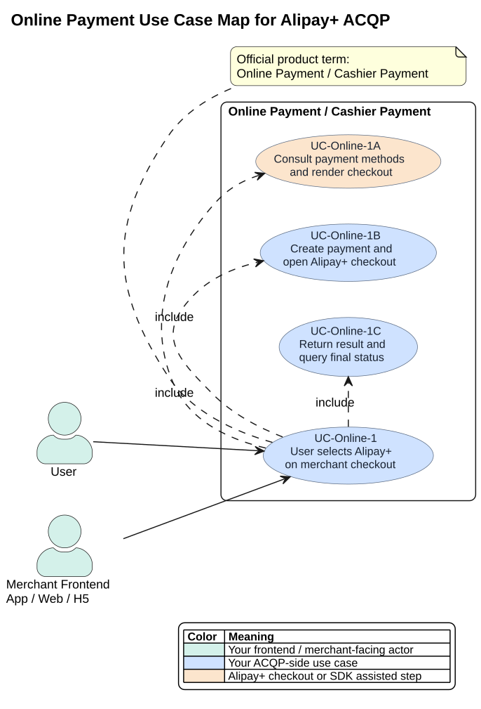
触发画面与官方样例
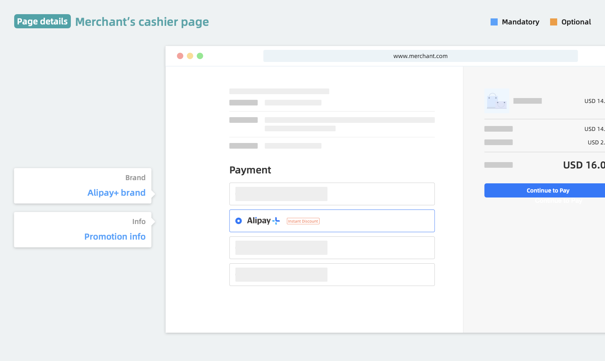
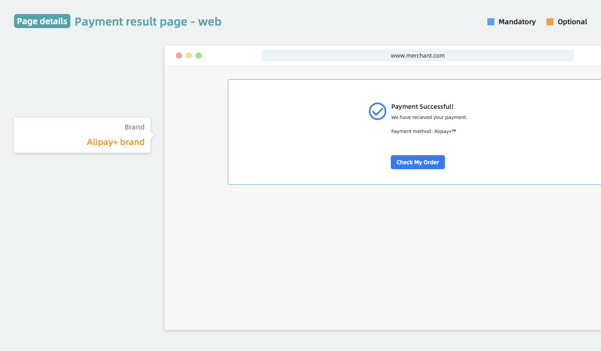
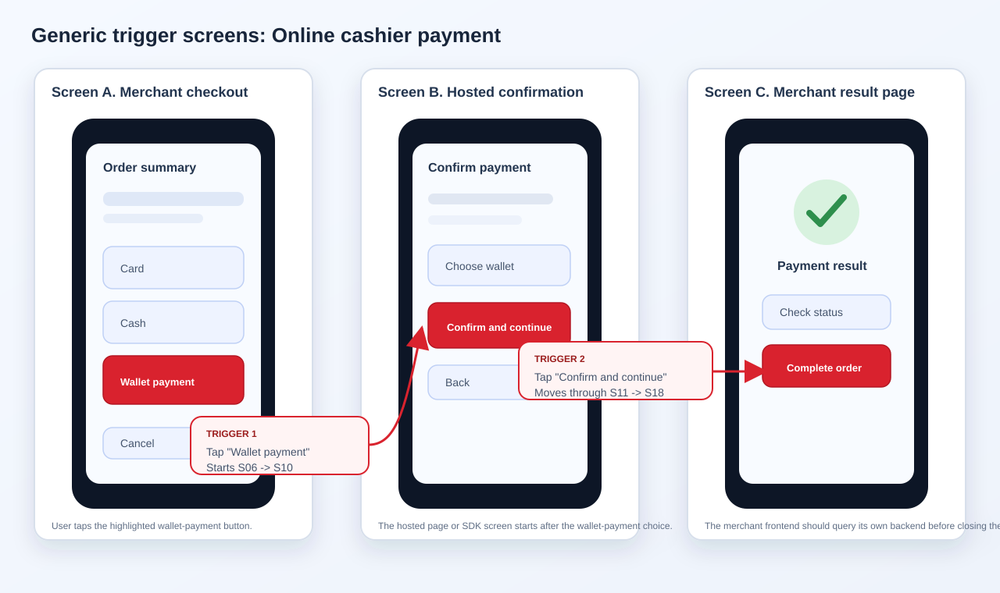
| 画面 | 动作 | 触发的序列号 | 作用 |
|---|---|---|---|
| 商户收银台 | 点击 Wallet payment 一类入口 | S06-S10 | 用户选中支付方式后，你的前端向自有后台发起建单并进入官方 checkout / SDK 链路。 |
| 官方 checkout / SDK 页 | 点击确认继续支付 | S11-S18 | 用户进入钱包选择、确认和回传结果阶段。 |
| 商户结果页 | 点击刷新状态 / 完成订单 | S21-S23 | 你的前端回到自有后台确认最终状态，再结束订单流程。 |
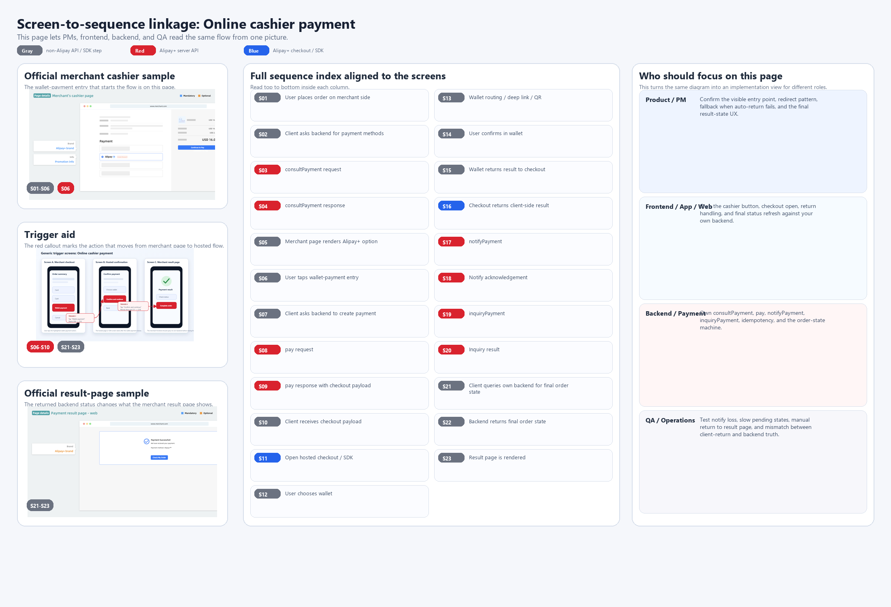
这张图把“用户在什么画面执行什么动作”与主时序段和最终结果页联动起来。产品经理可先看入口与回流，前端可看页面跳转与状态刷新，后端可看哪些时序段需要自己实现。
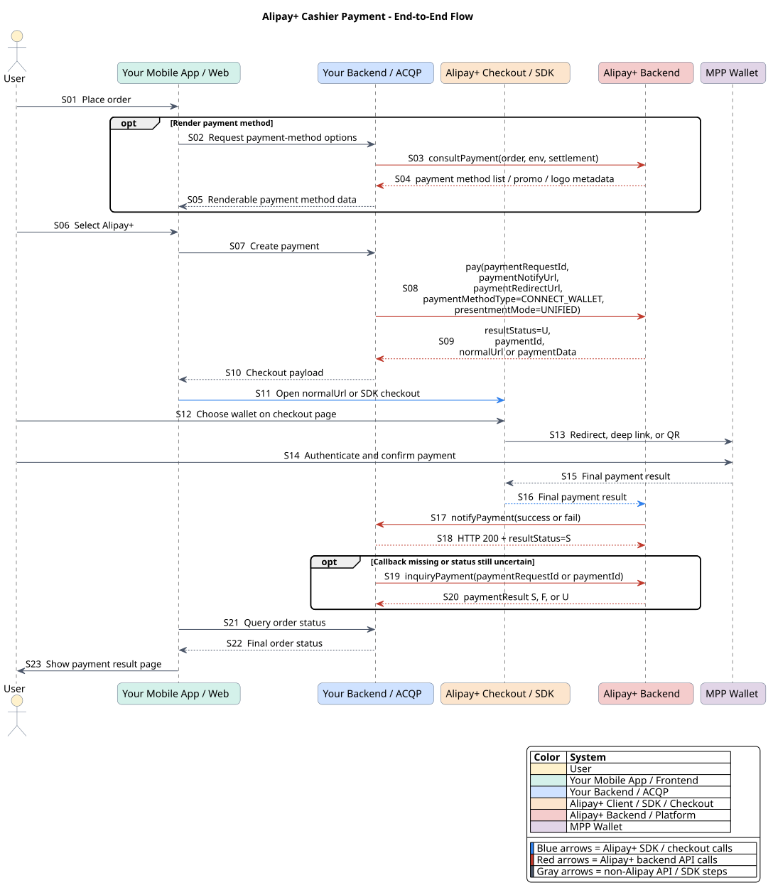
读图提示：颜色现在只表达“调用类型”。红线表示调用 Alipay+ 服务端 API，蓝线表示调用 Alipay+ 客户端能力（checkout / SDK），灰线表示非 Alipay API / SDK 的其它步骤，例如用户动作、自有系统内部调用、门店终端动作，以及钱包生态内部协作。
表里的“官方依据”列不是说每一步都是 API。灰色步骤如果带官方链接，表示官方流程文档对这一动作有描述，可用来核对流程正确性。
| 序列号 | 线条颜色 | 跨系统调用 | 官方依据（API / 流程文档） | 说明 |
|---|---|---|---|---|
| S01 | 灰色 | User → Client 下单 | Accept a payment | 用户先在你的 App / Web 收银台创建业务订单，支付流程从这里起步。 |
| S02 | 灰色 | Client → ACQP 请求支付方式选项 | Accept a payment | 这是你前端向自己后台拿支付方式展示数据的内部调用。 |
| S03 | 红色 | ACQP → Alipay+ Backend 查询支付方式 | consultPayment | 后台对后台查询可用钱包、促销、logo 等展示信息。 |
| S04 | 红色 | Alipay+ Backend → ACQP 返回支付方式信息 | consultPayment | 返回的是可渲染元数据，不是最终支付结果。 |
| S05 | 灰色 | ACQP → Client 返回可渲染支付方式数据 | Accept a payment | 你的前端据此展示 `Alipay+` 入口，而不是直接渲染官方原始响应。 |
| S06 | 灰色 | User → Client 选择 Alipay+ | Accept a payment | 这是用户在你收银台完成支付方式选择的动作。 |
| S07 | 灰色 | Client → ACQP 创建支付 | Accept a payment | 前端把订单号、金额、币种、终端环境等信息发给你后台。 |
| S08 | 红色 | ACQP → Alipay+ Backend 发起支付 | pay (Cashier Payment) | 这是线上 Cashier Payment 的核心服务端 API。 |
| S09 | 红色 | Alipay+ Backend → ACQP 返回支付受理结果 | pay (Cashier Payment) | 通常返回 `paymentId` 与 `normalUrl` 或 `paymentData`，此时并不代表支付已最终成功。 |
| S10 | 灰色 | ACQP → Client 返回 checkout 打开信息 | Accept a payment | 你的前端只拿到拉起支付所需参数，不直接拿官方密钥或服务端凭证。 |
| S11 | 蓝色 | Client → Alipay+ Checkout / SDK 打开支付页 | SDK / checkout workflow | 这是客户端跳转或拉起 SDK 的动作，不是后台 API。 |
| S12 | 灰色 | User → Alipay+ Checkout / SDK 在 checkout 页选择钱包 | Accept a payment | 用户在 Alipay+ checkout 页面选择具体钱包。 |
| S13 | 灰色 | Checkout → MPP Wallet 钱包路由 / deep link / QR | SDK / checkout workflow | 这一步发生在官方 checkout 与钱包生态之间，但不是 Alipay+ 服务端 API。 |
| S14 | 灰色 | User → MPP Wallet 确认支付并认证 | Accept a payment | 用户在钱包里输入密码、做人脸或完成其他认证。 |
| S15 | 灰色 | MPP Wallet → Checkout 返回钱包侧支付结果 | SDK / checkout workflow | 钱包侧结果先回到 checkout / SDK 层，这一步也不是 Alipay+ 服务端 API。 |
| S16 | 蓝色 | Checkout → Alipay+ Backend 回传最终支付结果 | SDK / checkout workflow | 客户端层把最终支付确认交回官方后台。 |
| S17 | 红色 | Alipay+ Backend → ACQP 异步通知支付结果 | notifyPayment | 这是支付最终态收敛的主路径。 |
| S18 | 红色 | ACQP → Alipay+ Backend 返回通知确认 | notifyPayment | 你的后台完成验签、幂等和落库后，应答 `HTTP 200`。 |
| S19 | 红色 | ACQP → Alipay+ Backend 补偿查询 | inquiryPayment | 当 callback 没到、状态长期不确定时，用 inquiry 补查。 |
| S20 | 红色 | Alipay+ Backend → ACQP 返回支付查询结果 | inquiryPayment | 查询结果通常是 `S / F / U` 等最终或中间状态。 |
| S21 | 灰色 | Client → ACQP 查询订单状态 | Accept a payment | 前端回到结果页后，应查你自己的后台，不直接查官方。 |
| S22 | 灰色 | ACQP → Client 返回最终订单状态 | Accept a payment | 这是你前端展示成功、失败或处理中状态的直接依据。 |
| S23 | 灰色 | Client → User 展示支付结果页 | Accept a payment | 整个线上支付体验闭环在你的前端结果页完成。 |
图 1 源文件
UC-Store-1. 用户出示付款码，店铺扫描
线下支付先分成两种主模式：`User-presented` 是“用户出示码，店铺扫描”；`Merchant-presented` 是“店铺展示码，用户扫描”。下面先展开 `User-presented`。
关键原则：用户付款码由钱包侧生成并展示；你的系统从“门店扫到用户码后发起支付”开始。
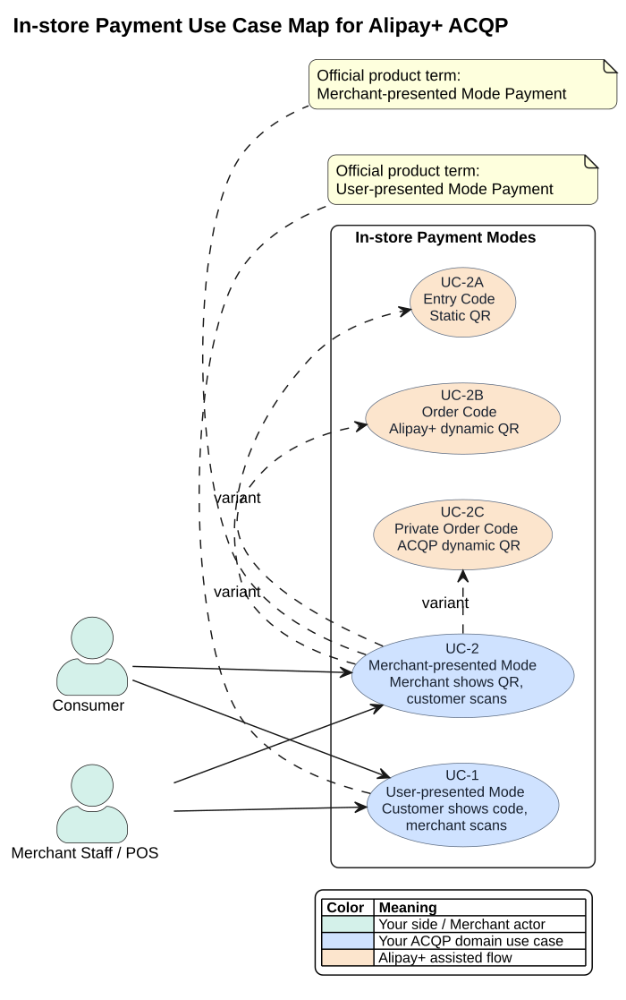
触发画面与官方样例
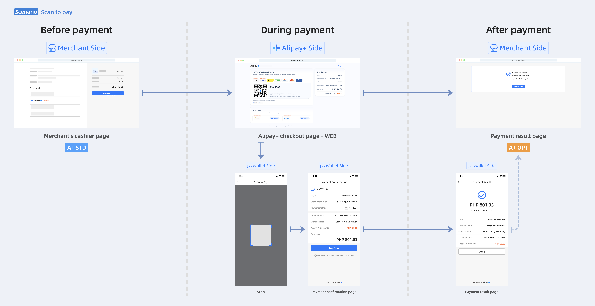
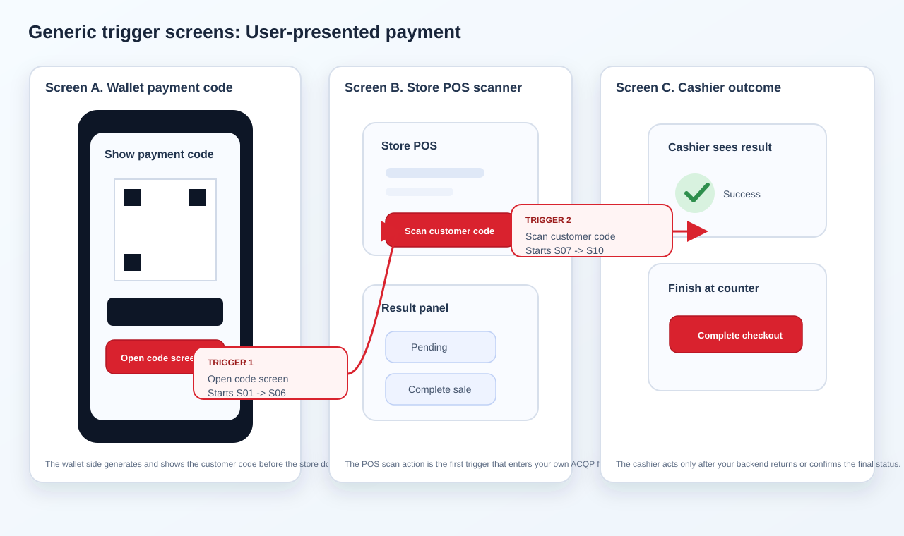
说明：这张图只用于解释触发动作和时序号，不代表官方钱包 UI。
| 画面 | 动作 | 触发的序列号 | 作用 |
|---|---|---|---|
| 钱包付款码页 | 打开付款码页面 | S01-S06 | 钱包侧获取并展示付款码。此时你的系统还没有开始处理支付。 |
| 门店 POS 扫码页 | 点击扫描用户码 / 输入金额 | S07-S10 | 门店第一次把用户码和订单金额送入你的 ACQP 支付链路。 |
| 门店收银结果页 | 确认完成收银 | S22-S24 | 你的后台返回最终状态后，POS 和收银员才完成交易闭环。 |
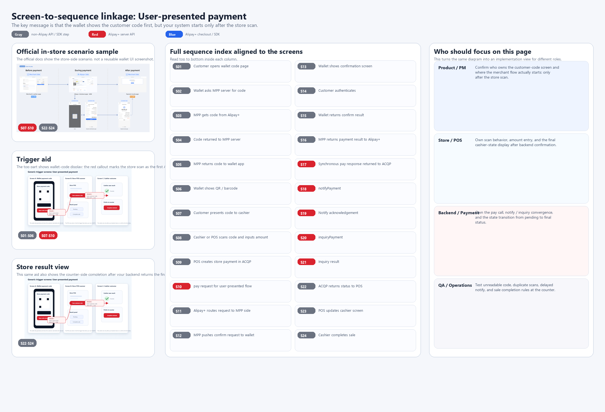
这张图强调：钱包侧先显示付款码，真正进入你方支付链路的是门店扫码和建单动作。门店/POS、后端和运营可以用同一张图对齐责任边界。
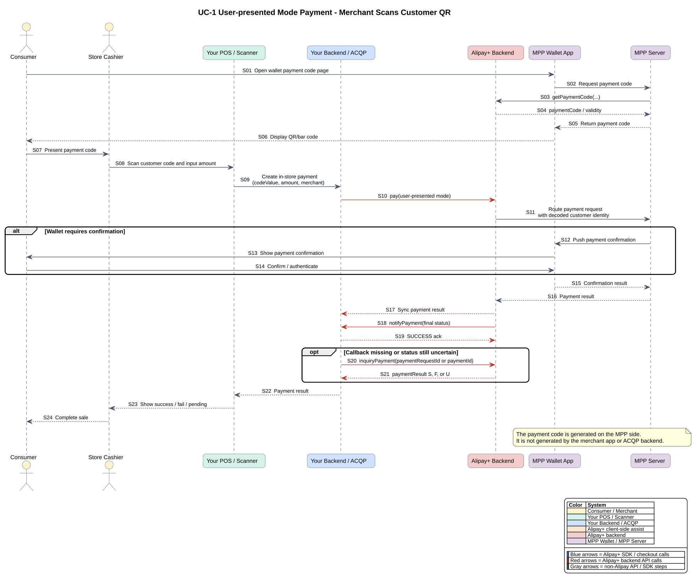
读图提示：颜色现在只表达“调用类型”。红线表示调用 Alipay+ 服务端 API，蓝线表示调用 Alipay+ 客户端能力，灰线表示非 Alipay API / SDK 的其它步骤。用户付款码先由钱包侧获取并展示，然后门店扫描后，你的 ACQP 后台才进入主支付链路。
表里的“官方依据”列同样不是说每一步都是 API。灰色步骤挂的是官方流程文档，用来证明该步骤在官方流程里存在。
| 序列号 | 线条颜色 | 跨系统调用 | 官方依据（API / 流程文档） | 说明 |
|---|---|---|---|---|
| S01 | 灰色 | Consumer → Wallet 打开付款码页面 | User-presented product intro | 用户先在钱包里进入付款码页，支付还没进入你方系统。 |
| S02 | 灰色 | Wallet → MPP Server 请求付款码 | User-presented workflow | 钱包 App 向钱包后台索取可展示的付款码。 |
| S03 | 灰色 | MPP Server → Alipay+ Backend 获取付款码 | User-presented workflow | 这是钱包生态与 Alipay+ 之间的取码动作，不是 ACQP 调用，也不是你要实现的 API。 |
| S04 | 灰色 | Alipay+ Backend → MPP Server 返回付款码与有效期 | User-presented workflow | 钱包后台拿到付款码后准备回传给 App。 |
| S05 | 灰色 | MPP Server → Wallet 返回付款码 | User-presented workflow | 钱包 App 得到可以展示给门店扫描的码值。 |
| S06 | 灰色 | Wallet → Consumer 展示二维码 / 条码 | User-presented workflow | 用户码由钱包侧展示，不是门店或 ACQP 生成。 |
| S07 | 灰色 | Consumer → Cashier 出示付款码 | User-presented workflow | 门店收银员此时才开始与用户的付款码交互。 |
| S08 | 灰色 | Cashier → POS 扫码并输入金额 | User-presented workflow | 金额和码值先进入你的门店端设备。 |
| S09 | 灰色 | POS → ACQP 创建门店支付 | User-presented workflow | 这是门店系统进入你统一后台的起点。 |
| S10 | 红色 | ACQP → Alipay+ Backend 发起用户码扣款 | pay (User-presented Mode Payment) | 这是 UPM 模式下 ACQP 的主支付调用。 |
| S11 | 灰色 | Alipay+ Backend → MPP Server 路由支付请求 | User-presented workflow | 官方后台根据用户码解析出的身份，把支付请求路由到正确的钱包生态。这不是 ACQP 直接控制的 API。 |
| S12 | 灰色 | MPP Server → Wallet 推送确认请求 | User-presented workflow | 如果钱包需要用户确认，会先把确认请求推到钱包 App。 |
| S13 | 灰色 | Wallet → Consumer 展示确认页 | User-presented workflow | 用户在钱包中看到待支付订单与金额。 |
| S14 | 灰色 | Consumer → Wallet 确认 / 认证 | User-presented workflow | 用户完成密码、生物识别等确认动作。 |
| S15 | 灰色 | Wallet → MPP Server 返回确认结果 | User-presented workflow | 钱包 App 把确认结果回传给钱包后台。 |
| S16 | 灰色 | MPP Server → Alipay+ Backend 返回支付结果 | User-presented workflow | 钱包生态把最终确认结果送回官方后台。 |
| S17 | 红色 | Alipay+ Backend → ACQP 同步支付结果 | pay (User-presented Mode Payment) | 这是支付主调用链路上的同步结果返回。 |
| S18 | 红色 | Alipay+ Backend → ACQP 异步通知最终状态 | notifyPayment | 最终结果收敛仍以 callback 为主。 |
| S19 | 红色 | ACQP → Alipay+ Backend 返回通知确认 | notifyPayment | 你的后台完成验签、幂等和状态落库后返回成功应答。 |
| S20 | 红色 | ACQP → Alipay+ Backend 补偿查询 | inquiryPayment | 当 callback 没到或状态长期不确定时补查。 |
| S21 | 红色 | Alipay+ Backend → ACQP 返回查询结果 | inquiryPayment | 补查结果可用于把订单从处理中推进到最终态。 |
| S22 | 灰色 | ACQP → POS 返回支付结果 | User-presented workflow | 你的后台把最终支付结果返给门店端设备。 |
| S23 | 灰色 | POS → Cashier 展示成功 / 失败 / 处理中 | User-presented workflow | 收银员依据门店终端展示结果继续处理交易。 |
| S24 | 灰色 | Cashier → Consumer 完成收银 | User-presented workflow | 门店侧交易闭环到此结束。 |
UC-1 PlantUML 源码
@startuml title UC-1 User-presented Mode Payment - Merchant Scans Customer QR skinparam backgroundColor white skinparam shadowing false skinparam sequenceMessageAlign center skinparam roundcorner 12 skinparam dpi 140 skinparam defaultFontName Arial skinparam defaultFontSize 11 skinparam titleFontSize 15 skinparam legendFontSize 10 skinparam participantFontSize 11 skinparam actorFontSize 11 skinparam sequenceArrowFontSize 10 skinparam ArrowColor #4A5568 skinparam ParticipantBorderColor #5B6B82 skinparam ActorBorderColor #5B6B82 legend right |= Color |= System | |<#FFF2CC>| Consumer / Merchant | |<#D4F1EA>| Your POS / Scanner | |<#CFE2FF>| Your Backend / ACQP | |<#FCE5CD>| Alipay+ client-side assist | |<#F4CCCC>| Alipay+ backend | |<#E1D5E7>| MPP Wallet / MPP Server | ---- |<#2F80ED>| Blue arrows = Alipay+ SDK / checkout calls | |<#C0392B>| Red arrows = Alipay+ backend API calls | |<#4A5568>| Gray arrows = non-Alipay API / SDK steps | endlegend actor Consumer #FFF2CC actor "Store Cashier" as Cashier #FFF2CC participant "Your POS / Scanner" as POS #D4F1EA participant "Your Backend / ACQP" as ACQP #CFE2FF participant "Alipay+ Backend" as AP #F4CCCC participant "MPP Wallet App" as Wallet #E1D5E7 participant "MPP Server" as MPPServer #E1D5E7 autonumber "S00" Consumer -> Wallet: Open wallet payment code page Wallet -> MPPServer: Request payment code MPPServer -> AP: getPaymentCode(...) AP --> MPPServer: paymentCode / validity MPPServer --> Wallet: Return payment code Wallet --> Consumer: Display QR/bar code Consumer -> Cashier: Present payment code Cashier -> POS: Scan customer code and input amount POS -> ACQP: Create in-store payment\n(codeValue, amount, merchant) ACQP -[#C0392B]> AP: pay(user-presented mode) AP -> MPPServer: Route payment request\nwith decoded customer identity alt Wallet requires confirmation MPPServer -> Wallet: Push payment confirmation Wallet -> Consumer: Show payment confirmation Consumer -> Wallet: Confirm / authenticate end Wallet --> MPPServer: Confirmation result MPPServer --> AP: Payment result AP -[#C0392B]--> ACQP: Sync payment result AP -[#C0392B]> ACQP: notifyPayment(final status) ACQP -[#C0392B]--> AP: SUCCESS ack opt Callback missing or status still uncertain ACQP -[#C0392B]> AP: inquiryPayment(paymentRequestId or paymentId) AP -[#C0392B]--> ACQP: paymentResult S, F, or U end ACQP --> POS: Payment result POS --> Cashier: Show success / fail / pending Cashier --> Consumer: Complete sale @enduml
UC-Store-2. 用户扫描店铺二维码并支付
关键原则：merchant-presented 只表示“店铺展示二维码”，不表示“二维码一定由 Alipay+ 生成”。Entry Code 和 Private Order Code 由 ACQP 侧发码；Order Code 由 Alipay+ 生成后同步给门店展示。三条分支的共同起点是“店铺侧已经确定商户上下文并进入待支付状态”，但只有 Order Code 和 Private Order Code 必然在扫码前由 POS 先创建动态订单；Entry Code 的金额输入可以发生在扫码后的商户页。
触发画面与官方样例
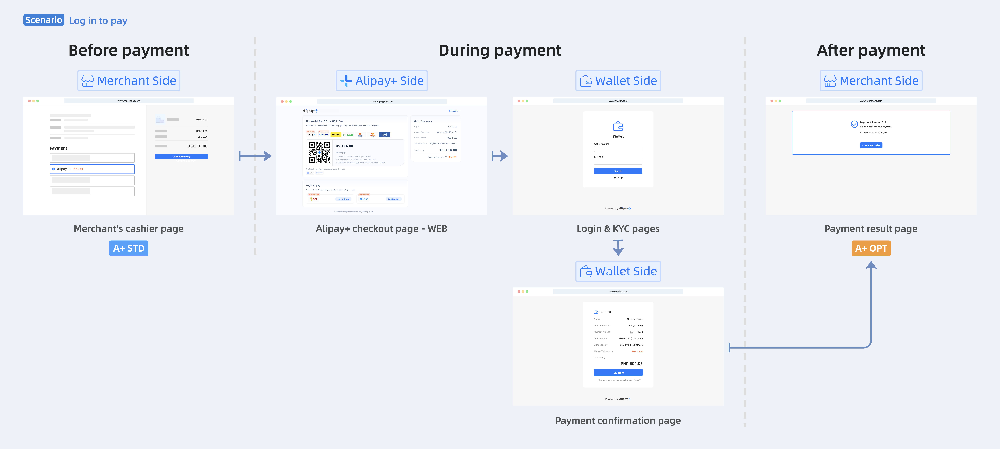
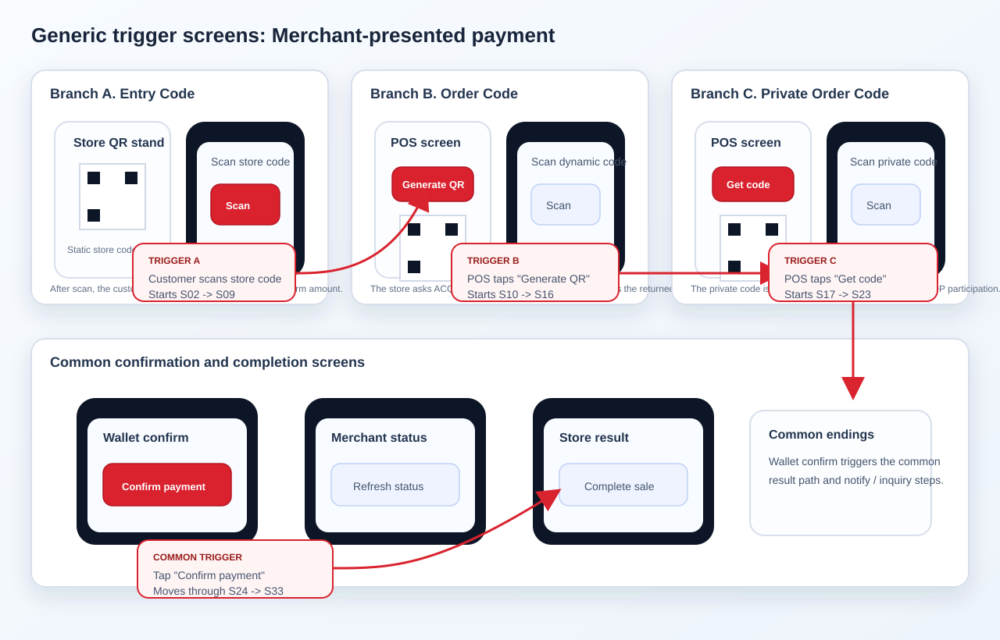
说明：这张图只用于解释三种码型分别从哪个动作开始进入时序。
| 分支 | 触发画面与动作 | 触发的序列号 | 作用 |
|---|---|---|---|
Entry Code | 用户扫描门店展示的静态码 | S02-S09 | 用户先进入商户页，再由 ACQP 向 Alipay+ 发起支付。 |
Order Code | POS 点击生成动态码并展示给用户扫描 | S10-S16 | 门店先建动态订单，再展示 Alipay+ 返回的动态码。 |
Private Order Code | POS 获取私有码并展示给用户扫描 | S17-S23 | 二维码由 ACQP 发出，解码时也需要 ACQP 参与。 |
| 公共后段 | 用户在钱包确认支付 | S24-S33 | 三条分支最后都收敛到通知、补查和门店收银完成。 |
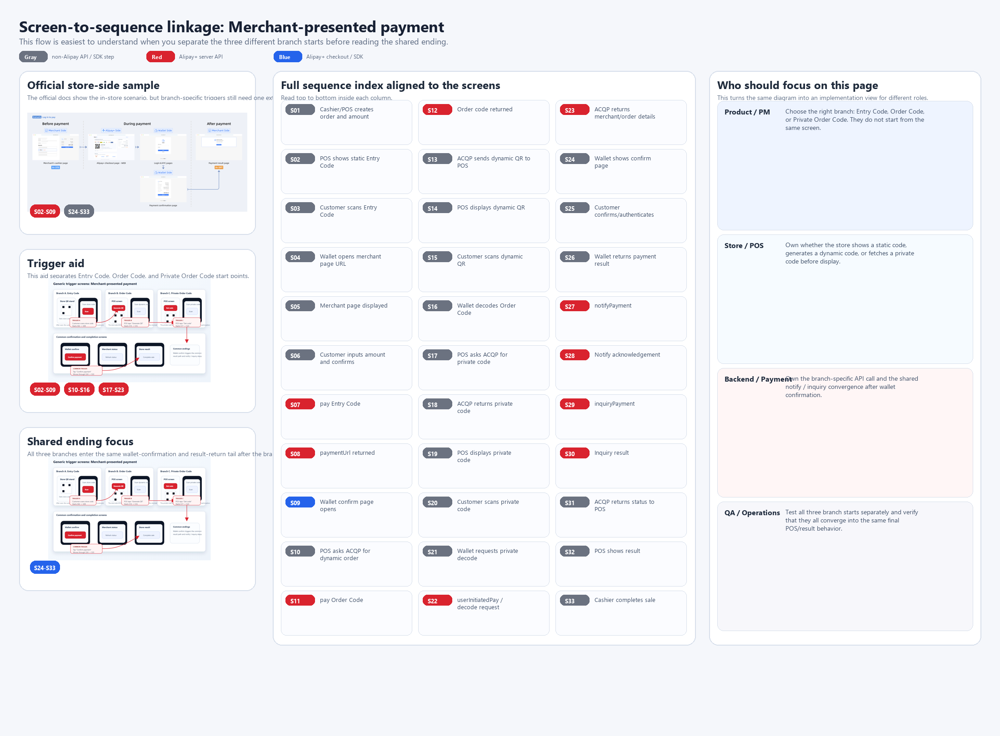
这张图把三种码型各自的起点动作和它们最终共享的确认/返回结果链路放到同一张图里，适合产品、POS、后端一起确认选型和实现分工。
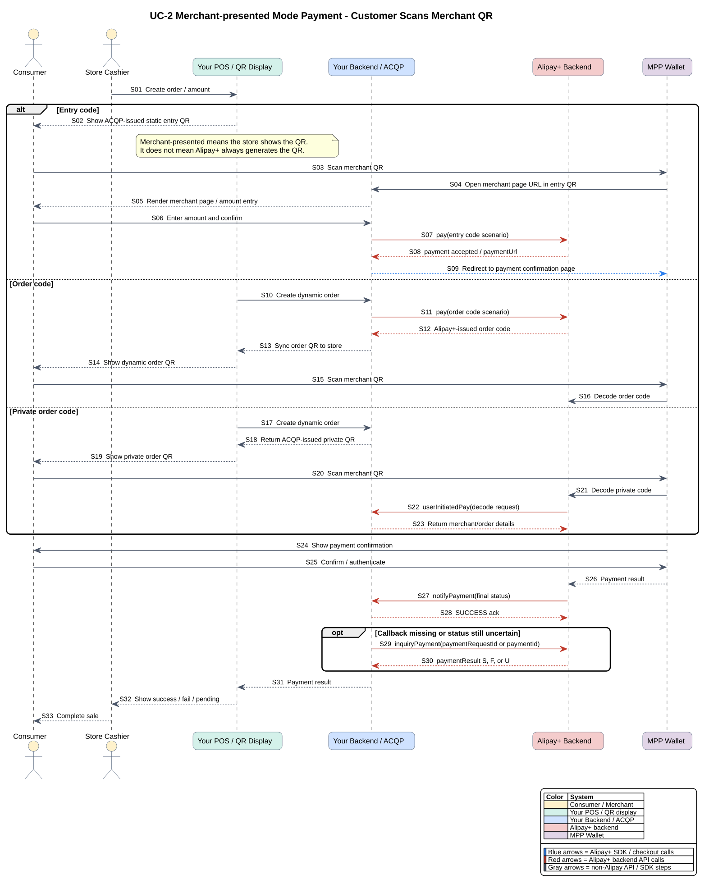
读图提示：颜色现在只表达“调用类型”。红线表示调用 Alipay+ 服务端 API，蓝线表示调用 Alipay+ 客户端能力，灰线表示非 Alipay API / SDK 的其它步骤。这张图有 3 条分支，所以不能只用一组统一序列号去硬解释全部流程。下面的表按 Entry Code、Order Code、Private Order Code 三个分支分别对齐图里的消息顺序。
| 序列号 | 线条颜色 | 跨系统调用 | 官方依据（API / 流程文档） | 说明 |
|---|---|---|---|---|
| S01 | 灰色 | Cashier → POS 创建订单 / 输入金额 | Overview | 线下 merchant-presented 三个分支都从门店侧先创建订单开始。 |
| S02 | 灰色 | POS → Consumer 展示 ACQP 静态 Entry Code | Entry Code guide | 这是 Entry Code 分支，二维码由 ACQP 侧签发并由门店展示。 |
| S03 | 灰色 | Consumer → Wallet 扫描门店码 | Entry Code guide | 用户用钱包扫描店铺展示的静态码。 |
| S04 | 灰色 | Wallet → ACQP 打开码中携带的商户页 URL | Entry Code guide | 钱包根据静态码中的 URL 进入 ACQP 提供的商户页。这不是 Alipay+ API。 |
| S05 | 灰色 | ACQP → Consumer 渲染商户页 / 金额输入页 | Entry Code guide | 用户在这个页面确认要支付给哪个商户、付多少钱。 |
| S06 | 灰色 | Consumer → ACQP 输入金额并确认 | Entry Code guide | 只有在用户输入金额并确认后，ACQP 才正式发起支付。 |
| S07 | 红色 | ACQP → Alipay+ Backend 发起 Entry Code 支付 | pay (Entry Code) | 这是 Entry Code 场景对应的支付请求。 |
| S08 | 红色 | Alipay+ Backend → ACQP 返回支付受理结果 / paymentUrl | pay (Entry Code) | 返回确认页地址，供钱包继续进入确认流程。 |
| S09 | 蓝色 | ACQP → Wallet 跳转到支付确认页 | Entry Code guide | Entry Code 分支到这里把用户带入钱包确认页。 |
| S10 | 灰色 | POS → ACQP 创建动态订单 | pay (Order Code) | 这是 Order Code 分支的起点，门店先向后台申请一笔动态订单。 |
| S11 | 红色 | ACQP → Alipay+ Backend 请求生成 Order Code | pay (Order Code) | 只有这一支是由官方返回动态二维码内容。 |
| S12 | 红色 | Alipay+ Backend → ACQP 返回 Alipay+-issued order code | pay (Order Code) | 后台收到的是订单码内容，不是最终支付结果。 |
| S13 | 灰色 | ACQP → POS 同步动态订单二维码 | pay (Order Code) | ACQP 把官方生成的动态码下发到门店端展示。 |
| S14 | 灰色 | POS → Consumer 展示动态 Order Code | pay (Order Code) | 用户看到的是门店屏幕上的动态二维码。 |
| S15 | 灰色 | Consumer → Wallet 扫描动态码 | pay (Order Code) | 用户用钱包读取动态订单码。 |
| S16 | 灰色 | Wallet → Alipay+ Backend 解码 Order Code | pay (Order Code) | 钱包把动态码交给官方后台解码出订单信息。这一步属于流程动作，不是 ACQP 侧 API。 |
| S17 | 灰色 | POS → ACQP 创建动态订单 | Private Order Code guide | 这是 Private Order Code 分支的起点，这一支也要求 POS 先创建动态订单。 |
| S18 | 灰色 | ACQP → POS 返回 ACQP 私有码 | Private Order Code guide | 这里的二维码是 ACQP 自己生成并返回给门店展示的。 |
| S19 | 灰色 | POS → Consumer 展示 Private Order Code | Private Order Code guide | 门店展示的是 ACQP 私有码，不是官方 order code。 |
| S20 | 灰色 | Consumer → Wallet 扫描私有码 | Private Order Code guide | 用户用钱包扫描 ACQP 私有码。 |
| S21 | 灰色 | Wallet → Alipay+ Backend 提交私有码进行解码 | Private Order Code guide | 钱包先把扫码内容交给官方后台判断如何继续处理。这一步属于流程动作，不是 ACQP 侧 API。 |
| S22 | 红色 | Alipay+ Backend → ACQP 请求解码私有码 | userInitiatedPay | 官方后台向 ACQP 请求订单与商户详情。 |
| S23 | 红色 | ACQP → Alipay+ Backend 返回商户 / 订单详情 | userInitiatedPay | Private Order Code 分支在这里把解码后的业务信息交回官方后台。 |
| S24 | 灰色 | Wallet → Consumer 展示支付确认页 | Overview | 无论前面是哪种码型，确认页最终都在钱包中展示给用户。 |
| S25 | 灰色 | Consumer → Wallet 确认 / 认证 | Overview | 用户在钱包里完成密码或生物识别等确认动作。 |
| S26 | 灰色 | Wallet → Alipay+ Backend 返回支付结果 | Overview | 钱包侧确认结果回到官方后台。这不是 ACQP 直接调用的接口。 |
| S27 | 红色 | Alipay+ Backend → ACQP 异步通知支付结果 | notifyPayment | 三种 merchant-presented 分支最终都通过 notifyPayment 收敛。 |
| S28 | 红色 | ACQP → Alipay+ Backend 返回通知确认 | notifyPayment | 你的后台处理完通知后返回成功应答。 |
| S29 | 红色 | ACQP → Alipay+ Backend 补偿查询 | inquiryPayment | 当通知缺失或状态不确定时，统一用 inquiryPayment 补查。 |
| S30 | 红色 | Alipay+ Backend → ACQP 返回查询结果 | inquiryPayment | 补查结果把订单推进到成功、失败或继续处理中状态。 |
| S31 | 灰色 | ACQP → POS 返回支付结果 | Overview | 你的后台把最终状态返给门店终端。 |
| S32 | 灰色 | POS → Cashier 展示成功 / 失败 / 处理中 | Overview | 收银员根据门店端结果决定是否完成交易或人工介入。 |
| S33 | 灰色 | Cashier → Consumer 完成销售 | Overview | 线下 merchant-presented 收银闭环结束。 |
图 0. 整体系统构造图
这张图只保留必要的跨系统主链路，并给关键连线加上 A01-A18 编号。它重点回答两件事：门店系统如何并入你现有平台；交易成功、对账、结算、商户打款之间的责任边界如何拆开。像签名、任务调度、内部记录这类支撑能力被折叠进平台边界，不再单独拉线制造视觉噪音。
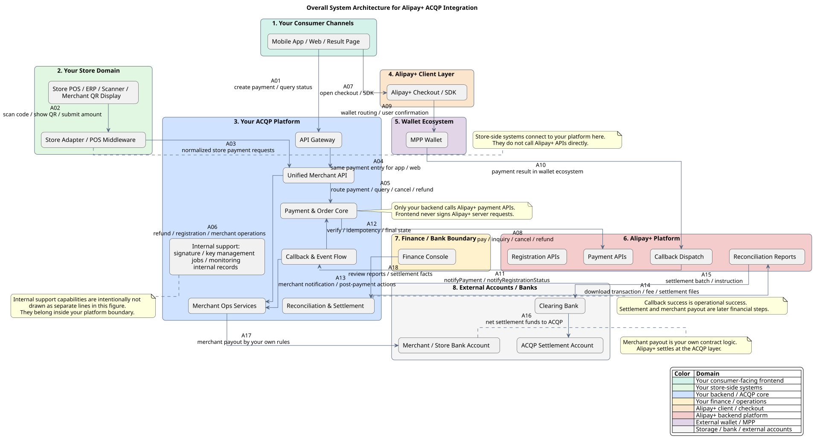
| 编号 | 主路径 | 说明 |
|---|---|---|
| A01 | 消费者前端 → API Gateway | 移动端、Web 和结果页统一从受控公共入口进入你方平台。 |
| A02 | 门店系统 → Store Adapter | POS、ERP、扫码枪和二维码展示设备先接入门店适配层。 |
| A03 | Store Adapter → Unified Merchant API | 门店协议、字段和设备差异在这里被正则化成统一内部请求。 |
| A04 | API Gateway → Unified Merchant API | 线上 App / Web 与线下门店最后都汇总到同一业务入口。 |
| A05 | Unified Merchant API → Payment & Order Core | 支付创建、查单、撤销、退款等交易核心能力都进入支付核心。 |
| A06 | Unified Merchant API → Merchant Ops Services | 商户报备、退款运营动作、门店通知等非主支付动作走运营服务。 |
| A07 | 消费者前端 → Alipay+ Checkout / SDK | 线上 Cashier Payment 在客户端侧打开官方 checkout 或 SDK。 |
| A08 | Payment & Order Core → Alipay+ Payment APIs | 只有你的后台调用 pay、inquiry、cancel、refund 等官方服务端 API。 |
| A09 | Alipay+ Checkout / SDK → MPP Wallet | 官方客户端层把用户路由到具体钱包并进入确认流程。 |
| A10 | MPP Wallet → Alipay+ Callback Dispatch | 钱包生态内形成的支付结果先回到 Alipay+ 平台。 |
| A11 | Alipay+ Callback Dispatch → Callback & Event Flow | 官方异步通知进入你方回调入口并开始验签、幂等和事件处理。 |
| A12 | Callback & Event Flow → Payment & Order Core | 回调处理把最终状态写回订单核心，推进支付状态机。 |
| A13 | Callback & Event Flow → Merchant Ops Services | 回调后续动作，例如商户通知、门店通知、运营动作，从这里分发。 |
| A14 | Reconciliation & Settlement → Reconciliation Reports | 你的对账与结算服务主动下载交易、费用、结算等官方报表。 |
| A15 | Reconciliation Reports → Clearing Bank | 官方结算报表对应外部清算/银行事实，不是前台支付成功提示。 |
| A16 | Clearing Bank → ACQP Settlement Account | Alipay+ 对 ACQP 的净额结算最终落到 ACQP 结算账户。 |
| A17 | Merchant Ops Services → Merchant / Store Bank Account | 你给商户或门店打款是自己的合同与费率逻辑，不是 Alipay+ 代你定义。 |
| A18 | Finance Console → Reconciliation & Settlement | 财务或运营人员在这里核对报表、结算事实和商户打款状态。 |
图 0 PlantUML 源码摘录
@startuml title Overall System Architecture for Alipay+ ACQP Integration left to right direction skinparam backgroundColor white skinparam shadowing false skinparam roundcorner 14 skinparam linetype ortho skinparam nodesep 55 skinparam ranksep 65 skinparam defaultTextAlignment center skinparam packageStyle rectangle skinparam componentStyle rectangle skinparam ArrowColor #4A5568 skinparam packageBorderColor #5B6B82 skinparam componentBorderColor #5B6B82 skinparam databaseBorderColor #5B6B82 skinparam queueBorderColor #5B6B82 ... @enduml
图 0B. 推荐部署拓扑图
这张图专门回答部署问题。它把客户端 / 门店网络、公共入口、私有服务、数据与密钥、Alipay+ 平台、财务银行区分开，避免把 callback、签名、数据库和门店接入堆在一层。
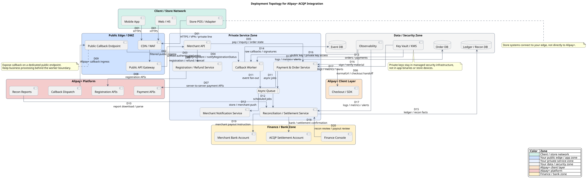
| 部署编号 | 区域 | 建议 |
|---|---|---|
| D01 | 客户端 / 门店网络 | Mobile App、Web、POS 从各自网络进入受控边界。 |
| D02 | 公共入口 | CDN / WAF 之后进入 Public API Gateway，过滤并统一入口。 |
| D03 | 公共入口 → 业务入口 | 认证后的流量统一进入 Merchant API。 |
| D04 | 回调公网入口 | 为 notifyPayment / notifyRegistrationStatus 暴露独立 callback endpoint。 |
| D05 | 内部业务服务 | Merchant API 把支付订单与报备/退款拆给不同内部服务。 |
| D06 | 客户端能力交接 | Payment & Order Service 只把 checkout payload / normalUrl 交给客户端。 |
| D07 | 支付服务端 API | Payment & Order Service 调用官方支付类服务端 API。 |
| D08 | 运营服务端 API | Registration / Refund Service 调用报备、退款、取消相关 API。 |
| D09 | 官方回调入口方向 | Alipay+ Callback Dispatch 进入你的 Public Callback Endpoint。 |
| D10 | 报表下载链路 | Recon Reports 被你的对账服务下载、解析和落账。 |
| D11 | 异步队列写入 | 支付服务和回调 worker 都会向异步队列写任务或事件。 |
| D12 | 异步消费 | 队列把通知、补偿任务和定时作业分发给下游服务。 |
| D13 | 订单库 | Payment & Order Service 将订单和支付事实写入 Order DB。 |
| D14 | 事件库 | Callback Worker 存储原始回调、验签结果和事件记录。 |
| D15 | 总账 / 对账库 | 对账与结算服务把账务事实和报表结果写入 Ledger / Recon DB。 |
| D16 | 密钥管理 | 签名和验签材料放在 KMS，不放到 App、POS 或代码仓库。 |
| D17 | 可观测性 | 支付、回调、对账服务统一输出日志、指标和告警。 |
| D18 | ACQP 结算确认 | 对账/结算服务依据银行事实确认 ACQP 结算到账。 |
| D19 | 商户打款指令 | 对账/结算服务在满足内部规则后向商户银行账户发起打款。 |
| D20 | 财务审核入口 | Finance Console 用于审核对账、结算和商户打款。 |
图 0B 源文件
门店侧系统如何整合到你现有系统
| 门店侧系统 | 推荐接入点 | 应该发给你后台的内容 | 不要怎么做 |
|---|---|---|---|
| Store POS / Cash Register | Store Adapter / POS Middleware → Merchant API | 订单号、金额、币种、终端号、扫码值、请求发码或查状态。 | 不要让 POS 直接签名调用 Alipay+ API。 |
| Scanner / QR Display | 由 POS 控制；显示内容可来自 ACQP 发码，也可来自 Alipay+ Order Code | 只负责扫什么码 / 显示什么码。 | 不要把支付成功判断放在设备本身。 |
| Store Order / ERP | 对接 Store Adapter | 商品、应付金额、门店号、打印 / 关单指令。 | 不要把 ERP 暴露成 Alipay+ 回调接收端。 |
如何算钱
官方文档明确覆盖 ACQP 与 Alipay+ 之间的支付金额、手续费、对账报表、结算报表和结算到账事实，见 Perform reconciliation 与 Settlement Report。但官方没有替你定义“你最终给商户打多少钱”的合同结算公式，这部分必须由你自己的 Merchant Settlement Engine 计算。
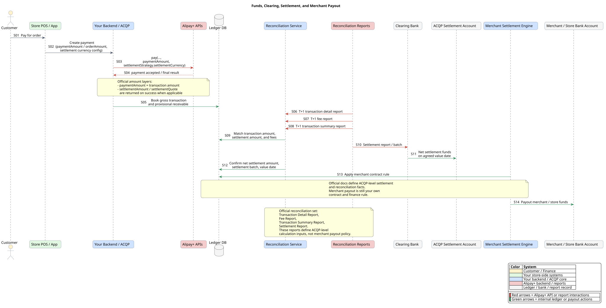
Report purpose
This report is not just an API memo and not just a collection of diagrams. It is an integration report intended for design review and implementation planning. The target audience includes product owners, architects, backend engineers, mobile engineers, store-system owners, and finance or operations teams that need to understand settlement and reconciliation boundaries.
The perspective is strictly ACQP-side integration: how your frontend, store systems, and backend connect to Alipay+. The report therefore explains payment-mode selection, system responsibilities, result convergence, and the financial boundary between payment success, reconciliation, settlement, and merchant payout.
Terminology and scope
These terms often mean different things across different teams and systems. The table below fixes the meaning used by this report before any diagram or API mapping is read.
| Term | Meaning in this report | Why it matters |
|---|---|---|
ACQP perspective | The report is written from your acquiring-platform side, not from the wallet's internal implementation side. | When the report says "should do", the default subject is your platform. |
Online Payment | In this report it specifically means the official overview product line Online Payment / Cashier Payment, not every possible online payment scenario. | It avoids mixing the official product name with a generic phrase. |
Cashier Payment | The online flow that starts from the merchant app or website cashier and continues into Alipay+ checkout or SDK. | It is different from in-store QR payment even if a QR appears in some web cases. |
In-store Payment | The official offline payment family, split into User-presented and Merchant-presented. | The online/offline split must be fixed before discussing offline variants. |
User-presented | The customer shows a payment code and the store scans it. The code is generated by the wallet side. | This prevents the wrong assumption that ACQP or the store generates the customer code. |
Merchant-presented | The store shows a QR and the customer scans it. It does not mean the QR is always generated by Alipay+. | This is the most common source of confusion across Entry Code, Order Code, and Private Order Code. |
MPP / wallet ecosystem | The external wallet app and its backend ecosystem used by the customer. | When the diagram shows gray lines, they are non-Alipay API / SDK steps, including wallet-side interactions and your own internal actions. |
Line color | Red lines mean Alipay+ server-side API calls; blue lines mean Alipay+ client-side capabilities such as checkout or SDK; gray lines mean all other non-Alipay API / SDK steps. | Gray does not mean "unsupported". A gray row can still cite an official workflow page when the official docs describe that step. |
callback | Alipay+ asynchronous notification back to your backend. | It is the main operational result path, but not the same as settlement completion. |
reconciliation | Financial verification using transaction, fee, settlement, and bank facts. | It should not be mixed with frontend payment success. |
settlement | Funds settlement between Alipay+ and ACQP. | It is not the same thing as merchant payout. |
merchant payout | Your own payout to the merchant or store under your contract rules. | That logic is owned by your settlement engine, not defined by Alipay+. |
What this report answers
| Question | How the report answers it |
|---|---|
| Which payment mode should be integrated? | The report separates online Cashier Payment, offline User-presented, and offline Merchant-presented before going into details. |
| What should the mobile app, store systems, and backend each do? | Each use case is followed by a sequence diagram, system-boundary explanation, and official API mapping. |
| How do store-side systems fit into the existing platform? | Figure 0 and Figure 0B explain system construction, deployment layering, and store integration boundaries. |
| How is money calculated, and when is a transaction really final? | The funds and reconciliation section separates callback success, reconciliation truth, settlement completion, and merchant payout readiness. |
The recommended reading order is: purpose and payment modes first, then the individual use cases, then the overall architecture and deployment topology, and finally the funds, reconciliation, and shared backend capabilities.
How this report maps to the official overview
The official entry is Overview. This report follows the same product split: online Cashier Payment, in-store User-presented, in-store Merchant-presented, and business operations such as Registration and Reconciliation.
UC-Online-1. Online Cashier Payment integration
Online mode starts from the merchant app or website cashier, not from a store QR.
This report shows consultPayment in the main path because the official docs provide it as the method-discovery API for wallets, promotions, and logos. It fits the implementation pattern where your own backend controls method rendering. If your cashier UI already has preconfigured payment methods, S02-S05 can be simplified, but the backend duties around pay / notifyPayment / inquiryPayment remain.
Trigger screens and official samples
| Screen | Action | Triggered sequence IDs | Meaning |
|---|---|---|---|
| Merchant cashier | Tap a wallet-payment entry | S06-S10 | The client asks your backend to create the payment and then enters the hosted checkout / SDK path. |
| Hosted checkout / SDK page | Confirm and continue | S11-S18 | The user proceeds through wallet selection, confirmation, and result return. |
| Merchant result page | Refresh status / complete order | S21-S23 | The frontend confirms final status with your own backend before closing the order. |
This figure links trigger screens, major sequence groups, and the returned result page in one place. PMs can read entry and return behavior first, while frontend and backend teams can map implementation ownership.
Reading aid: colors now indicate call type only. Red lines are Alipay+ server-side API calls, blue lines are Alipay+ client-side capabilities such as checkout or SDK, and gray lines are all other steps that are not Alipay API / SDK calls.
Gray rows may still contain official links. In those cases the link is a workflow reference, not an Alipay API endpoint.
| Sequence | Line color | Cross-system call | Official reference (API / workflow doc) | Meaning |
|---|---|---|---|---|
| S01 | Gray | User → Client place order | Accept a payment | The business order is first created in your own cashier experience. |
| S02 | Gray | Client → ACQP request payment-method options | Accept a payment | Your frontend asks your backend for method-rendering data. |
| S03 | Red | ACQP → Alipay+ Backend consult payment methods | consultPayment | Server-to-server consultation for wallets, promotions, logos, and related metadata. |
| S04 | Red | Alipay+ Backend → ACQP return payment-method data | consultPayment | This response is renderable metadata, not a final payment result. |
| S05 | Gray | ACQP → Client return renderable method data | Accept a payment | Your frontend renders the Alipay+ entry from your own backend response. |
| S06 | Gray | User → Client select Alipay+ | Accept a payment | The user chooses the Alipay+ method on your cashier page. |
| S07 | Gray | Client → ACQP create payment | Accept a payment | Your frontend sends order, amount, currency, and terminal environment to your backend. |
| S08 | Red | ACQP → Alipay+ Backend initiate payment | pay (Cashier Payment) | This is the core server-side API call for Cashier Payment. |
| S09 | Red | Alipay+ Backend → ACQP return acceptance result | pay (Cashier Payment) | Typically returns a paymentId and checkout opening data, not final success. |
| S10 | Gray | ACQP → Client return checkout payload | Accept a payment | Your frontend receives only what is needed to open checkout. |
| S11 | Blue | Client → Alipay+ Checkout / SDK open payment page | SDK / checkout workflow | This is a client-side redirect or SDK handoff, not a backend API call. |
| S12 | Gray | User → Alipay+ Checkout / SDK choose wallet on checkout | Accept a payment | The user chooses which wallet to use on the checkout page. |
| S13 | Gray | Checkout → MPP Wallet ウォレットへのルーティング / deep link / QR | SDK / checkout workflow | This handoff happens between checkout and the wallet ecosystem. |
| S14 | Gray | User → MPP Wallet confirm and authenticate payment | Accept a payment | The user completes password, biometric, or other wallet authentication. |
| S15 | Gray | MPP Wallet → Checkout return wallet-side result | SDK / checkout workflow | The wallet result first returns to the checkout / SDK layer. |
| S16 | Blue | Checkout → Alipay+ Backend report final result | SDK / checkout workflow | The client-side layer reports the final wallet outcome to the official backend. |
| S17 | Red | Alipay+ Backend → ACQP asynchronous payment notification | notifyPayment | This is the main path for final-state convergence. |
| S18 | Red | ACQP → Alipay+ Backend acknowledge callback | notifyPayment | Your backend should verify, deduplicate, persist, and return a success acknowledgement. |
| S19 | Red | ACQP → Alipay+ Backend compensation inquiry | inquiryPayment | Use inquiry when callback is missing or the state remains uncertain. |
| S20 | Red | Alipay+ Backend → ACQP return inquiry result | inquiryPayment | The result typically returns final or intermediate states such as S / F / U. |
| S21 | Gray | Client → ACQP query order status | Accept a payment | After returning to the result page, the frontend should query your backend, not Alipay+. |
| S22 | Gray | ACQP → Client return final order status | Accept a payment | This is the direct basis for success, failure, or pending UI states. |
| S23 | Gray | Client → User show payment result page | Accept a payment | The online payment experience closes on your own result page. |
Figure 1 source files
UC-Store-1. Customer presents a payment code and the store scans it
Offline payment first splits into two main modes: User-presented means the customer shows a code and the store scans it; Merchant-presented means the store shows a code and the customer scans it. This section expands the user-presented path first.
The wallet generates and displays the customer code. Your system starts after the store scans that code.
Trigger screens and official samples
This image is illustrative only. It maps actions to sequence IDs and does not claim to be an official wallet UI.
| Screen | Action | Triggered sequence IDs | Meaning |
|---|---|---|---|
| Wallet code screen | Open the payment-code page | S01-S06 | The wallet side obtains and displays the customer code before your platform is involved. |
| Store POS scan screen | Scan the customer code / input amount | S07-S10 | This is the first moment the store sends the customer code and order amount into your ACQP flow. |
| Store result screen | Complete checkout | S22-S24 | The cashier finishes the sale only after your backend returns or confirms the final result. |
This figure shows that the wallet displays the code first, while the store scan is the actual trigger into your ACQP path. Store/POS, backend, and operations can use it to align responsibilities.
Reading aid: colors now indicate call type only. Red lines are Alipay+ server-side API calls, blue lines are Alipay+ client-side capabilities, and gray lines are all other steps. Gray rows can still cite official workflow pages when the step is documented there.
| Sequence | Line color | Cross-system call | Official reference (API / workflow doc) | Meaning |
|---|---|---|---|---|
| S01 | Gray | Consumer → Wallet opens the payment-code page | User-presented product intro | The customer enters the wallet code page. Your ACQP path has not started yet. |
| S02 | Gray | Wallet → MPP Server requests a payment code | User-presented workflow | The wallet app asks its backend for a displayable payment code. |
| S03 | Gray | MPP Server → Alipay+ Backend obtains a payment code | User-presented workflow | This is part of the wallet ecosystem. It is not an ACQP API that you implement. |
| S04 | Gray | Alipay+ Backend → MPP Server returns the payment code | User-presented workflow | Alipay+ returns the code payload used by the wallet side. |
| S05 | Gray | MPP Server → Wallet syncs the payment code | User-presented workflow | The wallet backend pushes the code back to the wallet app. |
| S06 | Gray | Wallet → Consumer displays the payment code | User-presented product intro | The customer now shows the code to the cashier. |
| S07 | Gray | Cashier → POS starts scan and enters amount | User-presented workflow | The store begins the merchant-side payment context. |
| S08 | Gray | POS → ACQP submits the scanned code and amount | User-presented workflow | This is the first time the scanned user code reaches your platform. |
| S09 | Red | ACQP → Alipay+ Backend initiates payment | pay (User-presented Mode Payment) | Your backend sends the user-presented payment request to Alipay+. |
| S10 | Red | Alipay+ Backend → ACQP returns acceptance / intermediate status | pay (User-presented Mode Payment) | The response is acceptance or processing status, not necessarily the final result. |
| S11 | Gray | Alipay+ Backend identifies and routes the scanned code | User-presented workflow | Alipay+ determines which wallet ecosystem should receive the payment request. |
| S12 | Gray | Alipay+ Backend → MPP Server forwards the payment request | User-presented workflow | The payment request is routed from Alipay+ to the wallet side. |
| S13 | Gray | MPP Server → Wallet delivers the payment request | User-presented workflow | The wallet app receives the payment instruction and payment details. |
| S14 | Gray | Wallet → Consumer shows confirmation / authorization | User-presented workflow | The consumer confirms or authorizes payment inside the wallet. |
| S15 | Gray | Consumer → Wallet confirms or authenticates | User-presented workflow | The user completes password, biometric, or equivalent confirmation. |
| S16 | Gray | Wallet → MPP Server returns the wallet-side result | User-presented workflow | The result is first synced back within the wallet ecosystem. |
| S17 | Gray | MPP Server → Alipay+ Backend returns the payment result | User-presented workflow | The wallet ecosystem returns the result to Alipay+. |
| S18 | Red | Alipay+ Backend → ACQP notifies the final status | notifyPayment | The primary result-convergence path is still the asynchronous callback. |
| S19 | Red | ACQP → Alipay+ Backend acknowledges the callback | notifyPayment | Your backend returns a success response after verification, idempotency, and persistence. |
| S20 | Red | ACQP → Alipay+ Backend performs compensation inquiry | inquiryPayment | Use inquiry when the callback is missing or the status stays uncertain for too long. |
| S21 | Red | Alipay+ Backend → ACQP returns the inquiry result | inquiryPayment | The inquiry result can drive the order into a final state. |
| S22 | Gray | ACQP → POS returns the final order status | User-presented workflow | Your platform sends the result back to the store terminal. |
| S23 | Gray | POS → Cashier displays success / failure / pending | User-presented workflow | The store terminal becomes the operating source of truth for the cashier. |
| S24 | Gray | Cashier → Consumer completes the sale | User-presented workflow | The in-store transaction closes only after the store confirms the outcome. |
UC-1 source files
UC-Store-2. Customer scans the store QR code and pays
Merchant-presented means the store displays the QR, not that Alipay+ always generates it. Entry Code and Private Order Code are ACQP-side codes; Order Code is generated by Alipay+. All three branches share the same merchant-presented context, but only Order Code and Private Order Code necessarily require the POS to create a dynamic order before the scan. In Entry Code, amount entry can happen on the merchant page after scanning.
Trigger screens and official samples
This image is illustrative only. It separates Entry Code, Order Code, and Private Order Code start points.
| Branch | Trigger screen and action | Triggered sequence IDs | Meaning |
|---|---|---|---|
Entry Code | The customer scans the static store code | S02-S09 | The user first enters a merchant page and provides amount or order confirmation, then ACQP sends the payment request to Alipay+. |
Order Code | The POS generates a dynamic code and shows it for scanning | S10-S16 | The store creates a dynamic order first, then shows the Alipay+-issued code. |
Private Order Code | The POS gets a private code and shows it for scanning | S17-S23 | The QR is issued by ACQP and also requires ACQP during decode. |
| Common ending | The user confirms payment inside the wallet | S24-S33 | All three branches converge into notify, inquiry, and final store completion. |
This figure aligns each branch trigger with the shared confirmation and result path so product, POS, and backend teams can agree on branch selection and implementation ownership.
Reading aid: this diagram has three branches. The API mapping must therefore be explained per branch instead of forcing one flat sequence onto the whole flow.
| Sequence | Line color | Cross-system call | Official reference (API / workflow doc) | Meaning |
|---|---|---|---|---|
| S01 | Gray | Cashier → POS prepare the store-side payment context | Overview | All three merchant-presented branches start from a store payment context, but only some branches create a dynamic order before scanning. |
| S02 | Gray | POS → Consumer show ACQP static Entry Code | Entry Code guide | This is the Entry Code branch. The QR is issued by ACQP and displayed by the store. |
| S03 | Gray | Consumer → Wallet scan merchant QR | Entry Code guide | The customer scans the static store QR with the wallet. |
| S04 | Gray | Wallet → ACQP open merchant-page URL from QR | Entry Code guide | The wallet opens the 加盟店ページ URL contained in the static QR. |
| S05 | Gray | ACQP → Consumer render merchant page / amount-entry page | Entry Code guide | The customer sees the merchant page and confirms who is being paid. |
| S06 | Gray | Consumer → ACQP enter amount and confirm | Entry Code guide | Only after amount entry and confirmation does ACQP initiate the actual payment. |
| S07 | Red | ACQP → Alipay+ Backend initiate Entry Code payment | pay (Entry Code) | This is the payment request for the Entry Code scenario. |
| S08 | Red | Alipay+ Backend → ACQP return acceptance result / paymentUrl | pay (Entry Code) | The response contains the page or payload needed for wallet confirmation. |
| S09 | Blue | ACQP → Wallet redirect to confirmation page | Entry Code guide | The Entry Code branch now brings the user into the wallet confirmation flow. |
| S10 | Gray | POS → ACQP create dynamic order | pay (Order Code) | This is the start of the Order Code branch. |
| S11 | Red | ACQP → Alipay+ Backend request Order Code | pay (Order Code) | Only this branch receives the dynamic QR payload from Alipay+. |
| S12 | Red | Alipay+ Backend → ACQP return Alipay+-issued Order Code | pay (Order Code) | The response is order-code content, not a final payment result. |
| S13 | Gray | ACQP → POS sync dynamic QR to store | pay (Order Code) | ACQP sends the official dynamic QR to the store terminal for display. |
| S14 | Gray | POS → Consumer show dynamic Order Code | pay (Order Code) | The customer sees the dynamic QR on the store device. |
| S15 | Gray | Consumer → Wallet scan dynamic QR | pay (Order Code) | The wallet reads the dynamic merchant QR. |
| S16 | Gray | Wallet → Alipay+ Backend decode Order Code | pay (Order Code) | The wallet submits the scanned dynamic code to Alipay+ for decoding. |
| S17 | Gray | POS → ACQP create dynamic order | Private Order Code guide | This is the start of the Private Order Code branch, which also requires a store-side dynamic order before scanning. |
| S18 | Gray | ACQP → POS return ACQP private QR | Private Order Code guide | The QR itself is generated by ACQP and returned to the store terminal. |
| S19 | Gray | POS → Consumer show Private Order Code | Private Order Code guide | The store shows an ACQP-issued private QR, not an official Order Code. |
| S20 | Gray | Consumer → Wallet scan private QR | Private Order Code guide | The customer scans the ACQP-issued private QR. |
| S21 | Gray | Wallet → Alipay+ Backend submit private QR for decode | Private Order Code guide | The wallet first sends the scanned private QR to Alipay+. |
| S22 | Red | Alipay+ Backend → ACQP request private-code decode | userInitiatedPay | Alipay+ asks ACQP for the merchant and order information behind the private QR. |
| S23 | Red | ACQP → Alipay+ Backend return merchant / order details | userInitiatedPay | The Private Order Code branch supplies the decoded business details here. |
| S24 | Gray | Wallet → Consumer show payment confirmation page | Overview | Regardless of branch, the confirmation page is ultimately shown in the wallet. |
| S25 | Gray | Consumer → Wallet confirm / authenticate | Overview | The customer completes password or biometric confirmation in the wallet. |
| S26 | Gray | Wallet → Alipay+ Backend return payment result | Overview | The wallet-side result goes back to the official backend. |
| S27 | Red | Alipay+ Backend → ACQP asynchronous payment notification | notifyPayment | All merchant-presented branches converge through notifyPayment. |
| S28 | Red | ACQP → Alipay+ Backend acknowledge notification | notifyPayment | Your backend returns a success acknowledgement after verification and persistence. |
| S29 | Red | ACQP → Alipay+ Backend compensation inquiry | inquiryPayment | Use inquiry when notification is missing or the state remains uncertain. |
| S30 | Red | Alipay+ Backend → ACQP return inquiry result | inquiryPayment | The inquiry result can move the order to success, failure, or continued pending. |
| S31 | Gray | ACQP → POS return payment result | Overview | Your backend returns the final result to the store terminal. |
| S32 | Gray | POS → Cashier show success / fail / pending | Overview | The cashier acts on the result shown by the store device. |
| S33 | Gray | Cashier → Consumer complete sale | Overview | The merchant-presented in-store sale closes here. |
Figure 0. Overall system architecture
Figure 0 keeps only the necessary cross-system paths and labels them A01-A18. It answers how store-side systems are folded into your platform and how payment success, reconciliation, settlement, and merchant payout must be separated. Internal support capabilities such as signature handling, jobs, and internal records are intentionally folded into the platform boundary instead of being drawn as separate noisy lines.
| ID | Path | Meaning |
|---|---|---|
| A01 | Consumer channels → API Gateway | Mobile app, web, and result pages enter your platform through one controlled public entry. |
| A02 | Store systems → Store Adapter | POS, ERP, scanners, and QR display devices first connect to the store-adapter layer. |
| A03 | Store Adapter → Unified Merchant API | Store-side protocol and device differences are normalized into one internal request shape here. |
| A04 | API Gateway → Unified Merchant API | Online app/web traffic and in-store traffic converge into the same business entry. |
| A05 | Unified Merchant API → Payment & Order Core | Payment creation, status query, cancel, and refund all enter the payment core here. |
| A06 | Unified Merchant API → Merchant Ops Services | Merchant registration, refund operations, and store notifications are routed to ops services. |
| A07 | Consumer channels → Alipay+ Checkout / SDK | Online Cashier Payment opens the official checkout or SDK from the client side. |
| A08 | Payment & Order Core → Alipay+ Payment APIs | Only your backend calls official server-side APIs such as pay, inquiry, cancel, and refund. |
| A09 | Alipay+ Checkout / SDK → MPP Wallet | The official client layer routes the user into the selected wallet confirmation flow. |
| A10 | MPP Wallet → Alipay+ Callback Dispatch | Wallet-side payment results return to the Alipay+ platform first. |
| A11 | Alipay+ Callback Dispatch → Callback & Event Flow | Official callbacks enter your callback boundary and begin signature, idempotency, and event handling. |
| A12 | Callback & Event Flow → Payment & Order Core | Callback processing writes the final result into the order core and advances the state machine. |
| A13 | Callback & Event Flow → Merchant Ops Services | Post-payment actions such as merchant/store notification are dispatched from here. |
| A14 | Reconciliation & Settlement → Reconciliation Reports | Your reconciliation service downloads official transaction, fee, and settlement reports. |
| A15 | Reconciliation Reports → Clearing Bank | Settlement facts map to external clearing/bank facts, not to a UI success message. |
| A16 | Clearing Bank → ACQP Settlement Account | Net settlement from Alipay+ to the ACQP lands in the ACQP settlement account. |
| A17 | Merchant Ops Services → Merchant / Store Bank Account | Merchant payout follows your own contract and fee rules, not an Alipay+ payout formula. |
| A18 | Finance Console → Reconciliation & Settlement | Finance or operations teams review reports, settlement facts, and merchant payout status here. |
Figure 0 source files
overall-system-architecture.puml / overall-system-architecture.svg
Figure 0B. Recommended deployment topology
This figure answers the deployment question directly. It separates client/store network, public edge, private services, data and security, Alipay+ platform, and finance/bank zones.
| Deploy ID | Zone | Recommendation |
|---|---|---|
| D01 | Client / store network | Mobile app, web, and POS start from their own network boundary. |
| D02 | Public edge | Traffic reaches the Public API Gateway through CDN / WAF and controlled ingress. |
| D03 | Public edge → business entry | Authenticated traffic is forwarded into the Merchant API. |
| D04 | Public callback entry | Expose a dedicated callback endpoint for notifyPayment / notifyRegistrationStatus. |
| D05 | Internal business services | Merchant API splits payment/order traffic from registration/refund traffic. |
| D06 | Client handoff | Payment & Order Service only returns checkout payload / normalUrl to the client. |
| D07 | Payment server APIs | Payment & Order Service calls official payment-side server APIs. |
| D08 | Operations server APIs | Registration / Refund Service calls registration, refund, and cancel APIs. |
| D09 | Official callback ingress | Alipay+ Callback Dispatch enters your Public Callback Endpoint. |
| D10 | Report download path | Recon Reports are downloaded and parsed by your reconciliation service. |
| D11 | Async queue writes | Both payment services and callback workers publish jobs or events to the queue. |
| D12 | Async consumers | The queue fans out notifications, compensation jobs, and scheduled work. |
| D13 | Order database | Payment & Order Service stores order and payment facts in Order DB. |
| D14 | Event database | Callback Worker stores raw callbacks, signature results, and event records. |
| D15 | Ledger / recon database | Reconciliation and settlement services store ledger and report facts here. |
| D16 | Key management | Signing and verification material stays in KMS, not in apps, POS devices, or source code. |
| D17 | Observability | Payment, callback, and reconciliation services emit logs, metrics, and alerts. |
| D18 | ACQP settlement confirmation | The reconciliation/settlement service confirms settlement into the ACQP account. |
| D19 | Merchant payout instruction | After internal checks, payout instructions are sent to the merchant bank account. |
| D20 | Finance review entry | Finance Console is the review point for reconciliation, settlement, and payout. |
Figure 0B source files
How money is calculated
The official docs define payment amounts, fees, reconciliation files, settlement reports, and ACQP-facing settlement facts. They do not define your final merchant payout formula. That remains your own contract-based settlement logic.
| Layer | Scope | Meaning |
|---|---|---|
| Officially defined layer | paymentAmount, settlementAmount, Fee Report, Settlement Report | Official ACQP-to-Alipay+ financial facts. |
| Your internal settlement layer | merchant gross, platform fee, tax, merchant net | Your own merchant payout engine. |
| Rule | callback success ≠ settlement complete ≠ payout ready | Reconciliation and bank facts must confirm each boundary. |
レポートの目的
このレポートは単なる API メモでも、図の寄せ集めでもありません。設計レビューと実装計画のための統合レポートです。対象読者は、プロダクト担当、アーキテクト、バックエンドエンジニア、モバイルエンジニア、店舗システム責任者、そして精算・照合境界を確認したい財務 / 運用担当です。
視点は一貫して ACQP 側統合 です。つまり、自社フロントエンド、店舗システム、バックエンドが Alipay+ とどう接続されるかを説明します。そのため本レポートは、どの製品モードを接続すべきか、各システム層の責任は何か、結果をどう収束させるか、そして「支払成功」「照合完了」「資金決済完了」「加盟店へ入金可能」の境界がどう違うかを順に説明します。
用語と口径
これらの用語は、チームやシステムによって意味がぶれやすいものです。図や API 対応を読む前に、本レポートでの意味を固定します。
| 用語 | 本レポートでの意味 | 先に固定する理由 |
|---|---|---|
ACQP 視点 | ウォレット側の内部実装ではなく、自社のアクワイアリング基盤側からシステムと API を説明する視点です。 | 「何をすべきか」の主語が自社システムであることを明確にします。 |
Online Payment | 本レポートでは、公式 overview の Online Payment / Cashier Payment を指します。 | 一般的な「オンライン決済」と混同しないためです。 |
Cashier Payment | 加盟店 App / Web のレジ画面から始まり、Alipay+ checkout / SDK へ進むオンライン支払です。 | 店頭 QR 決済とは別物です。 |
In-store Payment | 公式の店頭決済カテゴリで、User-presented と Merchant-presented に分かれます。 | まずオンライン / オフラインを分け、その後でオフライン内部を分けるためです。 |
User-presented | 顧客が支払コードを提示し、店舗が読み取る方式です。コードはウォレット側が生成します。 | 顧客コードを ACQP や店舗が生成するという誤解を防ぎます。 |
Merchant-presented | 店舗が QR を表示し、顧客が読む方式です。常に Alipay+ が QR を生成する意味ではありません。 | Entry Code / Order Code / Private Order Code の違いを読む前提になります。 |
MPP / wallet ecosystem | 顧客が実際に使う外部ウォレットアプリとそのバックエンドです。 | 灰線は Alipay API / SDK 呼び出し以外の手順であり、ウォレット側協調や自社内部処理もここに含まれます。 |
線の色 | 赤線は Alipay+ サーバー API、青線は Alipay+ の checkout / SDK などのクライアント能力、灰線はそれ以外の非 Alipay API / SDK 手順です。 | 灰色は「公式根拠がない」という意味ではありません。灰色行にリンクがある場合、それは API ではなく公式フロー文書への根拠です。 |
callback | Alipay+ が自社バックエンドに返す非同期通知です。 | 運用上の結果収束であり、精算完了とは別です。 |
reconciliation | 取引、手数料、精算、銀行事実に基づく財務照合です。 | フロントの支払成功表示とは別の財務口径であると分かります。 |
settlement | Alipay+ と ACQP の間の資金精算完了です。 | 加盟店入金と同義ではありません。 |
merchant payout | 自社契約ルールに基づく加盟店 / 店舗への入金です。 | これは Alipay+ が定義するのではなく、自社精算ロジックが定義する領域です。 |
このレポートが答えること
| 問い | 本レポートでの答え方 |
|---|---|
| どの支払モードを接続すべきか | オンライン Cashier Payment、オフライン User-presented、オフライン Merchant-presented を最初に分けて説明します。 |
| モバイル、店舗システム、バックエンドはそれぞれ何をするべきか | 各 Use Case の直後に時系列図、システム境界説明、公式 API 対応を置いています。 |
| 店舗システムを既存プラットフォームにどう取り込むか | 図 0 と図 0B でシステム構成、配置分層、店舗統合境界を説明します。 |
| お金をどう計算し、いつ本当に確定とみなすか | 資金・照合章で「支払成功」「照合上の真実」「資金決済完了」「加盟店へ入金可能」を分けて説明します。 |
推奨読順は、まず目的と製品モード、その後に各 Use Case、続いて全体構成とデプロイ、最後に資金・照合・共有バックエンド機能です。
公式 overview との対応
公式入口は Overview です。本レポートは同じ製品区分に従います。オンラインは Cashier Payment、オフラインは User-presented と Merchant-presented、業務運用は Registration と Reconciliation に対応します。
UC-Online-1. オンライン Cashier Payment 統合
オンライン支払の起点は加盟店 App / Web のレジ画面であり、店舗 QR ではありません。
本レポートでは consultPayment を主経路に含めています。これは公式文書が、利用可能なウォレット、プロモーション、ロゴなどの表示情報を取得する手段としてこの API を提供しているためです。自社バックエンドが支払方法表示を統制する実装ではこの形が分かりやすく、すでにレジ UI に支払方法が固定されている場合は S02-S05 を簡略化できます。ただし、その場合でも pay / notifyPayment / inquiryPayment のバックエンド責務は変わりません。
起点画面と公式サンプル
| 画面 | 操作 | 起動する順序番号 | 意味 |
|---|---|---|---|
| 加盟店レジ画面 | ウォレット支払入口を押す | S06-S10 | 自社フロントエンドが自社バックエンドに決済作成を依頼し、公式 checkout / SDK 経路へ入ります。 |
| 公式 checkout / SDK 画面 | 確認して続行 | S11-S18 | ウォレット選択、確認、結果返却の段階へ進みます。 |
| 加盟店結果画面 | 状態更新 / 注文完了 | S21-S23 | フロントエンドは自社バックエンドに最終状態を確認してから注文を閉じます。 |
この図は、どの画面操作がどの時系列区間を起動し、戻り結果がどの画面へ反映されるかを一枚で示します。PM は入口と戻り導線、フロントエンドは画面遷移、バックエンドは実装責任を確認できます。
読図補助：色は呼び出し種別だけを表します。赤線は Alipay+ サーバー API、青線は Alipay+ の checkout / SDK などのクライアント能力、灰線はそれ以外の手順です。
灰色行にリンクがある場合、それは API ではなく公式フロー文書への根拠です。
| 順序 | 線の色 | システム間呼び出し | 公式根拠（API / フロー文書） | 意味 |
|---|---|---|---|---|
| S01 | 灰色 | User → Client 注文を作成 | Accept a payment | 最初に自社 App / Web のレジ画面で業務注文が作られます。 |
| S02 | 灰色 | Client → ACQP 支払方法候補を要求 | Accept a payment | フロントエンドが自社バックエンドに表示用の支払方法情報を取りに行く内部呼び出しです。 |
| S03 | 赤 | ACQP → Alipay+ Backend 支払方法を照会 | consultPayment | 利用可能なウォレット、プロモーション、ロゴなどの表示メタデータをサーバー間で取得します。 |
| S04 | 赤 | Alipay+ Backend → ACQP 支払方法データを返却 | consultPayment | 返るのは表示用メタデータであり、最終的な支払結果ではありません。 |
| S05 | 灰色 | ACQP → Client 表示用 method データを返却 | Accept a payment | フロントエンドは自社バックエンドの返却を使って Alipay+ 入口を描画します。 |
| S06 | 灰色 | User → Client Alipay+ を選択 | Accept a payment | ユーザーが自社レジ画面で Alipay+ 支払方法を選びます。 |
| S07 | 灰色 | Client → ACQP 決済を作成 | Accept a payment | 注文番号、金額、通貨、端末環境などを自社バックエンドに渡します。 |
| S08 | 赤 | ACQP → Alipay+ Backend 決済を開始 | pay (Cashier Payment) | Cashier Payment の中核となるサーバー API 呼び出しです。 |
| S09 | 赤 | Alipay+ Backend → ACQP 受理結果を返却 | pay (Cashier Payment) | 通常は paymentId と checkout 起動情報が返り、この時点では最終成功ではありません。 |
| S10 | 灰色 | ACQP → Client checkout 起動情報を返却 | Accept a payment | フロントエンドには checkout を開くための payload だけを返します。 |
| S11 | 青 | Client → Alipay+ Checkout / SDK 支払ページを開く | SDK / checkout workflow | これはクライアント側の redirect / SDK 引き継ぎであり、バックエンド API ではありません。 |
| S12 | 灰色 | User → Alipay+ Checkout / SDK checkout 上でウォレットを選択 | Accept a payment | ユーザーが checkout 画面で具体的なウォレットを選びます。 |
| S13 | 灰色 | Checkout → MPP Wallet ウォレットへのルーティング / deep link / QR | SDK / checkout workflow | この引き継ぎは checkout と ウォレット側経路の間で発生します。 |
| S14 | 灰色 | User → MPP Wallet 支払確認と認証 | Accept a payment | ユーザーはウォレット内で password、biometric などの認証を行います。 |
| S15 | 灰色 | MPP Wallet → Checkout ウォレット側結果を返却 | SDK / checkout workflow | ウォレットの結果は最初に checkout / SDK 層へ戻ります。 |
| S16 | 青 | Checkout → Alipay+ Backend 最終結果を返送 | SDK / checkout workflow | クライアント側の最終結果が公式バックエンドに渡されます。 |
| S17 | 赤 | Alipay+ Backend → ACQP 非同期決済通知 | notifyPayment | 最終状態を収束させる主経路は非同期通知です。 |
| S18 | 赤 | ACQP → Alipay+ Backend 通知確認応答 | notifyPayment | バックエンドは検証、重複排除、永続化の後に成功応答を返します。 |
| S19 | 赤 | ACQP → Alipay+ Backend 補償照会 | inquiryPayment | 非同期通知が欠落したり状態が不確実なときに inquiry を使います。 |
| S20 | 赤 | Alipay+ Backend → ACQP 照会結果を返却 | inquiryPayment | 返るのは S / F / U などの最終または中間状態です。 |
| S21 | 灰色 | Client → ACQP 注文状態を照会 | Accept a payment | 結果画面へ戻ったフロントエンドは Alipay+ ではなく自社バックエンドを照会すべきです。 |
| S22 | 灰色 | ACQP → Client 最終注文状態を返却 | Accept a payment | 成功、失敗、処理中の UI はこの返却に基づいて表示されます。 |
| S23 | 灰色 | Client → User 支払結果ページを表示 | Accept a payment | オンライン支払体験の閉環は自社フロントエンドの結果ページで完了します。 |
図 1 のソースファイル
UC-Store-1. 顧客が支払コードを提示し、店舗がスキャンする
オフライン決済は最初に 2 つの主モードへ分かれます。User-presented は「顧客がコードを提示し、店舗が読む」方式で、Merchant-presented は「店舗がコードを表示し、顧客が読む」方式です。ここではまず User-presented を展開します。
重要原則：顧客コードは ウォレット側が生成して表示します。自社システムは店舗が顧客コードを読み取った後から始まります。
起点画面と公式サンプル
この図はトリガー操作と順序番号を対応付けるための説明用であり、公式 wallet UI を表すものではありません。
| 画面 | 操作 | 起動する順序番号 | 意味 |
|---|---|---|---|
| wallet のコード画面 | 支払コード画面を開く | S01-S06 | ウォレット側がコードを取得して表示します。この段階では自社プラットフォームはまだ関与しません。 |
| 店舗 POS スキャン画面 | 顧客コードを読み取り、金額を入力する | S07-S10 | ここで初めて顧客コードと金額が自社 ACQP 経路へ入ります。 |
| 店舗結果画面 | 会計完了を確定する | S22-S24 | 自社 バックエンド が最終結果を返してから、店舗は販売を閉じます。 |
ウォレット側のコード表示と、店舗スキャン後に自社 ACQP 経路へ入る点を一枚で対応付けています。店舗/POS、バックエンド、運用が同じ図で責任分担を確認できます。
読図補助：色は呼び出し種別だけを表します。赤線は Alipay+ サーバー API、青線は Alipay+ クライアント能力、灰線はそれ以外の手順です。灰色行に公式リンクがある場合、それは API ではなく公式フロー記述への根拠です。
| 順序 | 線の色 | システム間呼び出し | 公式根拠（API / フロー文書） | 意味 |
|---|---|---|---|---|
| S01 | 灰色 | Consumer → Wallet 支払コード画面を開く | User-presented product intro | 顧客がウォレットのコード画面に入ります。まだ ACQP 側の処理は始まっていません。 |
| S02 | 灰色 | Wallet → MPP Server 支払コードを要求 | User-presented workflow | ウォレットアプリが表示用コードをウォレットバックエンドへ要求します。 |
| S03 | 灰色 | MPP Server → Alipay+ Backend 支払コードを取得 | User-presented workflow | これはウォレット側エコシステムの処理であり、ACQP が実装する API ではありません。 |
| S04 | 灰色 | Alipay+ Backend → MPP Server 支払コードを返却 | User-presented workflow | Alipay+ がウォレット側にコード内容を返します。 |
| S05 | 灰色 | MPP Server → Wallet コードを同期 | User-presented workflow | ウォレットバックエンドがコードをアプリへ返します。 |
| S06 | 灰色 | Wallet → Consumer 支払コードを表示 | User-presented product intro | 顧客がこのコードを店舗へ提示します。 |
| S07 | 灰色 | Cashier → POS スキャン開始と金額入力 | User-presented workflow | 店舗側で支払コンテキストが開始されます。 |
| S08 | 灰色 | POS → ACQP スキャンしたコードと金額を送信 | User-presented workflow | ここで初めて顧客コードが自社プラットフォームへ入ります。 |
| S09 | 赤 | ACQP → Alipay+ Backend 支払を開始 | pay (User-presented Mode Payment) | 自社バックエンドが user-presented 支払要求を Alipay+ へ送ります。 |
| S10 | 赤 | Alipay+ Backend → ACQP 受理結果 / 中間状態を返却 | pay (User-presented Mode Payment) | 返るのは受理結果や処理中状態であり、必ずしも最終結果ではありません。 |
| S11 | 灰色 | Alipay+ Backend スキャンコードを識別してルーティング | User-presented workflow | Alipay+ がどのウォレット系統へ送るかを判断します。 |
| S12 | 灰色 | Alipay+ Backend → MPP Server 支払要求を転送 | User-presented workflow | 支払要求が Alipay+ からウォレット側へ渡されます。 |
| S13 | 灰色 | MPP Server → Wallet 支払要求を同期 | User-presented workflow | ウォレットアプリが支払内容を受け取ります。 |
| S14 | 灰色 | Wallet → Consumer 確認 / 認証画面を表示 | User-presented workflow | 顧客はウォレット内で支払確認画面を見ます。 |
| S15 | 灰色 | Consumer → Wallet 確認 / 認証を実行 | User-presented workflow | パスワード、生体認証などで支払を承認します。 |
| S16 | 灰色 | Wallet → MPP Server ウォレット側結果を返却 | User-presented workflow | 結果はまずウォレット系統の中で戻されます。 |
| S17 | 灰色 | MPP Server → Alipay+ Backend 支払結果を返却 | User-presented workflow | ウォレット系統が最終結果を Alipay+ に返します。 |
| S18 | 赤 | Alipay+ Backend → ACQP 最終状態を非同期通知 | notifyPayment | 最終状態収束の主経路は非同期通知です。 |
| S19 | 赤 | ACQP → Alipay+ Backend 通知確認応答 | notifyPayment | 検証、重複排除、永続化の後に成功応答を返します。 |
| S20 | 赤 | ACQP → Alipay+ Backend 補償照会 | inquiryPayment | 通知欠落や状態不確実時は inquiry で補完します。 |
| S21 | 赤 | Alipay+ Backend → ACQP 照会結果を返却 | inquiryPayment | 照会結果を使って注文を最終状態へ進めます。 |
| S22 | 灰色 | ACQP → POS 最終注文状態を返却 | User-presented workflow | 自社プラットフォームが店舗端末へ結果を返します。 |
| S23 | 灰色 | POS → Cashier 成功 / 失敗 / 処理中を表示 | User-presented workflow | レジ担当者は店舗端末の結果を見て次の対応を判断します。 |
| S24 | 灰色 | Cashier → Consumer 販売を完了 | User-presented workflow | 店舗側が結果を確認して初めて店頭取引が閉じます。 |
UC-1 のソースファイル
UC-Store-2. 顧客が店舗 QR をスキャンして支払う
重要原則：merchant-presented は「店舗が QR を表示する」という意味であり、「QR が必ず Alipay+ 生成である」ことを意味しません。Entry Code と Private Order Code は ACQP 側発行、Order Code は Alipay+ 発行です。三つの分岐の共通点は「店舗側が支払コンテキストに入っている」ことですが、スキャン前に POS が動的注文を作るのは Order Code と Private Order Code であり、Entry Code では金額入力がスキャン後の加盟店ページで行われることがあります。
起点画面と公式サンプル
この図は三つの分岐の開始点を説明するための補助図です。
| 分岐 | 起点画面と操作 | 起動する順序番号 | 意味 |
|---|---|---|---|
Entry Code | 顧客が店舗の静的コードを読む | S02-S09 | 顧客は加盟店ページに入り、金額入力または注文確認の後で ACQP が Alipay+ へ支払要求を送ります。 |
Order Code | POS が動的コードを生成して表示する | S10-S16 | 店舗が先に動的注文を作成し、Alipay+ が返したコードを表示します。 |
Private Order Code | POS が私有码を取得して表示する | S17-S23 | コードは ACQP 発行であり、decode にも ACQP が参加します。 |
| 共通後段 | ウォレット内で支払確認を行う | S24-S33 | 三つの分岐は最後に notify、inquiry、店頭会計完了へ収束します。 |
三つの分岐の起点画面と、共通の確認 / 結果収束区間を同じ図にまとめています。プロダクト、POS、バックエンドが選型と実装境界を合わせるための図です。
読図補助：色は呼び出し種別だけを表します。赤線は Alipay+ サーバー API、青線は Alipay+ クライアント能力、灰線はそれ以外の手順です。この図には 3 つの分岐があるため、Entry Code、Order Code、Private Order Code の順に個別に読みます。
| 順序 | 線の色 | システム間呼び出し | 公式根拠（API / フロー文書） | 意味 |
|---|---|---|---|---|
| S01 | 灰色 | Cashier → POS 支払コンテキストを準備 | Overview | merchant-presented の三つの分岐はすべて店頭の支払コンテキストから始まりますが、スキャン前に動的注文を作るかどうかは分岐によって異なります。 |
| S02 | 灰色 | POS → Consumer ACQP 静的 Entry Code を表示 | Entry Code guide | Entry Code 分岐では ACQP が発行した静的 QR を店舗が表示します。 |
| S03 | 灰色 | Consumer → Wallet 店舗コードをスキャン | Entry Code guide | 顧客はウォレットで店舗に掲示された静的コードを読み取ります。 |
| S04 | 灰色 | Wallet → ACQP コード内の加盟店ページ URL を開く | Entry Code guide | ウォレットは静的コード中の URL を使って ACQP の加盟店ページに入ります。 |
| S05 | 灰色 | ACQP → Consumer 加盟店ページ / 金額入力画面を表示 | Entry Code guide | 顧客はどの加盟店にいくら支払うかをこの画面で確認します。 |
| S06 | 灰色 | Consumer → ACQP 金額を入力し確認 | Entry Code guide | 顧客が金額確認を終えてから ACQP が正式に支払要求を送ります。 |
| S07 | 赤 | ACQP → Alipay+ Backend Entry Code 支払を開始 | pay (Entry Code) | Entry Code シナリオに対応する支払要求です。 |
| S08 | 赤 | Alipay+ Backend → ACQP 受理結果 / paymentUrl を返却 | pay (Entry Code) | ウォレットが次に進む確認ページ URL が返ります。 |
| S09 | 青 | ACQP → Wallet 支払確認ページへ遷移 | Entry Code guide | Entry Code 分岐はここでウォレット内の確認ページにユーザーを送ります。 |
| S10 | 灰色 | POS → ACQP 動的注文を作成 | pay (Order Code) | Order Code 分岐では店舗がまず動的注文をバックエンドに要求します。 |
| S11 | 赤 | ACQP → Alipay+ Backend Order Code 生成を要求 | pay (Order Code) | この分岐だけが公式バックエンドから動的 QR payload を受け取ります。 |
| S12 | 赤 | Alipay+ Backend → ACQP Alipay+ 発行 order code を返却 | pay (Order Code) | 返るのは order code 内容であり、最終支払結果ではありません。 |
| S13 | 灰色 | ACQP → POS 動的 order code を配布 | pay (Order Code) | ACQP が公式生成の動的コードを店舗端末に渡します。 |
| S14 | 灰色 | POS → Consumer 動的 Order Code を表示 | pay (Order Code) | 顧客が見るのは店舗画面上の動的 QR です。 |
| S15 | 灰色 | Consumer → Wallet 動的コードをスキャン | pay (Order Code) | 顧客はウォレットで動的 order code を読み取ります。 |
| S16 | 灰色 | Wallet → Alipay+ Backend Order Code を decode | pay (Order Code) | ウォレットが動的コードを公式バックエンドに渡して注文情報を復元します。 |
| S17 | 灰色 | POS → ACQP 動的注文を作成 | Private Order Code guide | Private Order Code 分岐も同様に、スキャン前に店舗側で動的注文を作成します。 |
| S18 | 灰色 | ACQP → POS ACQP 私有码を返却 | Private Order Code guide | ここで返る QR は ACQP 自身が発行した private code です。 |
| S19 | 灰色 | POS → Consumer Private Order Code を表示 | Private Order Code guide | 店舗が表示するのは公式 order code ではなく ACQP private code です。 |
| S20 | 灰色 | Consumer → Wallet 私有码をスキャン | Private Order Code guide | 顧客は ACQP private code をウォレットで読み取ります。 |
| S21 | 灰色 | Wallet → Alipay+ Backend 私有码を渡して decode を要求 | Private Order Code guide | ウォレットはまず公式バックエンドに読み取った内容を渡し、次の処理を判断させます。 |
| S22 | 赤 | Alipay+ Backend → ACQP 私有码 decode を要求 | userInitiatedPay | 公式バックエンドが ACQP に merchant / order 詳細を要求します。 |
| S23 | 赤 | ACQP → Alipay+ Backend merchant / order 詳細を返却 | userInitiatedPay | Private Order Code 分岐ではここで decode 後の業務情報を公式バックエンドに返します。 |
| S24 | 灰色 | Wallet → Consumer 支払確認ページを表示 | Overview | どの分岐でも確認ページは最終的にウォレット内で表示されます。 |
| S25 | 灰色 | Consumer → Wallet 確認 / 認証 | Overview | 顧客はウォレット内でパスワードや生体認証による確認を行います。 |
| S26 | 灰色 | Wallet → Alipay+ Backend 支払結果を返却 | Overview | ウォレット側確認結果が公式バックエンドに戻ります。 |
| S27 | 赤 | Alipay+ Backend → ACQP 非同期支払通知 | notifyPayment | 3 つの merchant-presented 分岐は最終的に notifyPayment で ACQP に収束します。 |
| S28 | 赤 | ACQP → Alipay+ Backend 通知確認応答 | notifyPayment | 自社バックエンドは通知処理後に成功応答を返します。 |
| S29 | 赤 | ACQP → Alipay+ Backend 補償照会 | inquiryPayment | 通知欠落や状態不確実時は inquiryPayment を共通補償経路として使います。 |
| S30 | 赤 | Alipay+ Backend → ACQP 照会結果を返却 | inquiryPayment | 照会結果が order を success、failure、または継続 pending へ進めます。 |
| S31 | 灰色 | ACQP → POS 支払結果を返却 | Overview | 自社バックエンドが最終状態を店舗端末に返します。 |
| S32 | 灰色 | POS → Cashier 成功 / 失敗 / 処理中を表示 | Overview | レジ担当は店舗端末の結果を見て取引完了か手動介入かを判断します。 |
| S33 | 灰色 | Cashier → Consumer 販売を完了 | Overview | merchant-presented の店頭販売フローはここで閉じます。 |
図 0. 全体システム構成図
図 0 は必要なシステム間主経路だけを残し、A01-A18 の番号を付けています。店舗システムをどう自社プラットフォームへ取り込むか、決済成功・照合・精算・加盟店入金をどう分離するかを示します。署名、ジョブ、内部記録のような支援機能は、見やすさのため個別線ではなくプラットフォーム境界の中へ折り込んでいます。
| 番号 | 主経路 | 意味 |
|---|---|---|
| A01 | 消費者チャネル → API Gateway | モバイル App、Web、結果画面は 1 つの公開入口から自社プラットフォームへ入ります。 |
| A02 | 店舗システム → Store Adapter | POS、ERP、スキャナ、QR 表示装置はまず店舗適配層へ接続します。 |
| A03 | Store Adapter → Unified Merchant API | 店舗側のプロトコルや装置差異をここで自社内部の統一要求へ正規化します。 |
| A04 | API Gateway → Unified Merchant API | オンライン App / Web と店頭トラフィックは同じ業務入口へ収束します。 |
| A05 | Unified Merchant API → Payment & Order Core | 決済作成、状態照会、取消、返金などの取引中核処理はここへ入ります。 |
| A06 | Unified Merchant API → Merchant Ops Services | 加盟店登録、返金運用、店舗通知などの運用系処理は ops サービスへ流します。 |
| A07 | 消費者チャネル → Alipay+ Checkout / SDK | オンライン Cashier Payment ではクライアント側から公式 checkout / SDK を開きます。 |
| A08 | Payment & Order Core → Alipay+ Payment APIs | pay、inquiry、cancel、refund などの公式サーバー API を呼ぶのは自社バックエンドだけです。 |
| A09 | Alipay+ Checkout / SDK → MPP Wallet | 公式クライアント層が選択されたウォレット確認フローへユーザーを送ります。 |
| A10 | MPP Wallet → Alipay+ Callback Dispatch | ウォレット側の支払結果はまず Alipay+ プラットフォームへ戻ります。 |
| A11 | Alipay+ Callback Dispatch → Callback & Event Flow | 公式 callback が自社回调境界へ入り、署名検証、重複排除、イベント処理を開始します。 |
| A12 | Callback & Event Flow → Payment & Order Core | callback 処理が最終結果を注文コアへ反映し、状態機械を進めます。 |
| A13 | Callback & Event Flow → Merchant Ops Services | 加盟店通知や店舗通知などの後続処理はここから分配します。 |
| A14 | Reconciliation & Settlement → Reconciliation Reports | 自社照合サービスが公式の取引、手数料、精算レポートを取得します。 |
| A15 | Reconciliation Reports → Clearing Bank | 精算事実は外部 clearing / bank 事実に対応し、UI 成功表示とは別物です。 |
| A16 | Clearing Bank → ACQP Settlement Account | Alipay+ から ACQP への純額精算は ACQP settlement account に着金します。 |
| A17 | Merchant Ops Services → Merchant / Store Bank Account | 加盟店入金は自社契約と手数料規則で決まり、Alipay+ が式を定義するわけではありません。 |
| A18 | Finance Console → Reconciliation & Settlement | 財務や運用担当がレポート、精算事実、加盟店入金状況を確認します。 |
図 0B. 推奨デプロイトポロジー
この図は配置方針に集中しています。クライアント / 店舗ネットワーク、公開入口、私有サービス、データと鍵、Alipay+ プラットフォーム、財務 / 銀行ゾーンを分けています。
| 配置番号 | ゾーン | 推奨 |
|---|---|---|
| D01 | クライアント / 店舗ネットワーク | モバイル App、Web、POS はそれぞれのネットワーク境界から開始します。 |
| D02 | 公開入口 | CDN / WAF を通って Public API Gateway へ入り、公開入口を統制します。 |
| D03 | 公開入口 → 業務入口 | 認証済みトラフィックは Merchant API へ渡されます。 |
| D04 | 公開 callback 入口 | notifyPayment / notifyRegistrationStatus 用の専用 callback endpoint を公開します。 |
| D05 | 内部業務サービス | Merchant API が payment/order と registration/refund を別サービスへ振り分けます。 |
| D06 | クライアントへの引き継ぎ | Payment & Order Service は checkout payload / normalUrl だけをクライアントへ返します。 |
| D07 | 支払サーバー API | Payment & Order Service が公式の支払系サーバー API を呼びます。 |
| D08 | 運用サーバー API | Registration / Refund Service が登録、返金、取消 API を呼びます。 |
| D09 | 公式 callback 流入 | Alipay+ Callback Dispatch はあなたの Public Callback Endpoint に入ります。 |
| D10 | レポート取得経路 | Recon Reports を自社照合サービスが取得・解析します。 |
| D11 | 非同期キュー書き込み | 支払サービスと callback worker の両方がジョブやイベントをキューへ送ります。 |
| D12 | 非同期消費 | キューが通知、補償ジョブ、定時作業を下流サービスへ配信します。 |
| D13 | 注文 DB | Payment & Order Service が注文と支払事実を Order DB に保存します。 |
| D14 | イベント DB | Callback Worker が raw callback、署名結果、イベント記録を保存します。 |
| D15 | 総勘定 / 照合 DB | 照合・精算サービスが帳票事実と ledger 事実をここへ保存します。 |
| D16 | 鍵管理 | 署名・検証素材は KMS に置き、App、POS、ソースコードには置きません。 |
| D17 | 可観測性 | payment、callback、照合サービスはログ、メトリクス、アラートを統一出力します。 |
| D18 | ACQP 精算確認 | 照合 / 精算サービスが ACQP 口座への着金を確認します。 |
| D19 | 加盟店入金指示 | 内部条件を満たした後、加盟店銀行口座へ入金指示を出します。 |
| D20 | 財務レビュー入口 | Finance Console で照合、精算、加盟店入金を確認します。 |
図 0B のソースファイル
お金をどう計算するか
公式文書は ACQP と Alipay+ の間の支払金額、手数料、照合ファイル、精算レポート、精算事実を定義しますが、最終的な加盟店入金式は定義していません。そこは自社の契約ベース精算ロジックです。
| レイヤー | 範囲 | 意味 |
|---|---|---|
| 公式定義レイヤー | paymentAmount, settlementAmount, Fee Report, Settlement Report | ACQP と Alipay+ の公式金融事実です。 |
| 自社内部精算レイヤー | merchant gross, platform fee, tax, merchant net | 自社の加盟店入金ロジックが扱う領域です。 |
| 原則 | callback success ≠ settlement complete ≠ payout ready | 各境界は照合と銀行事実で確認する必要があります。 |